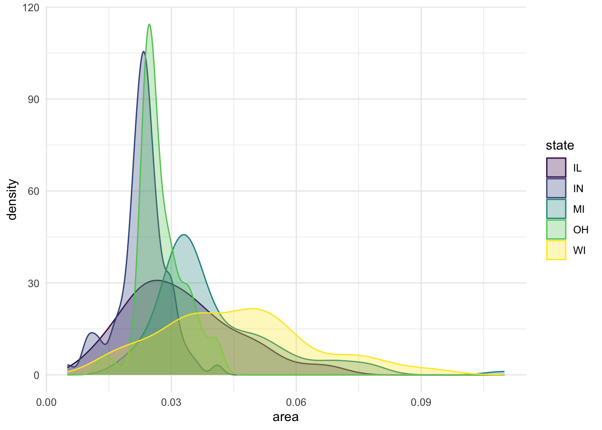
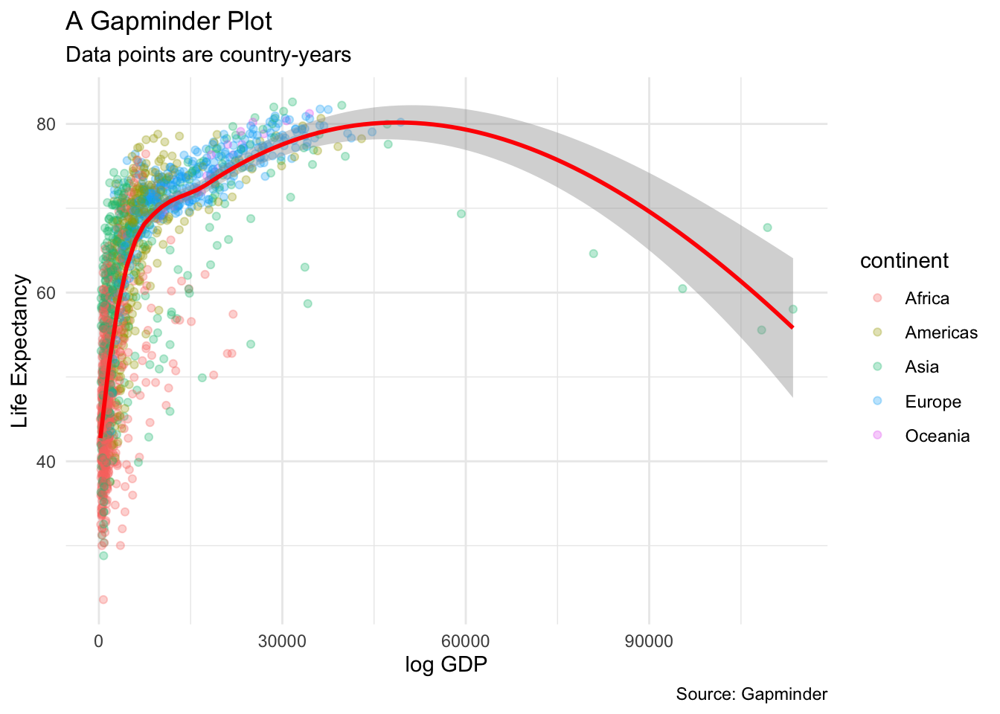
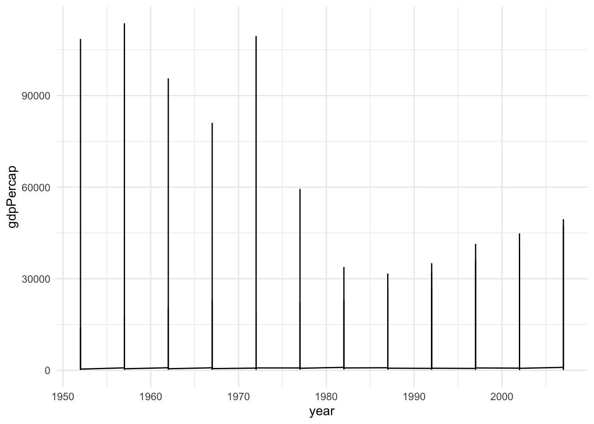

Chapter 4 Tidy data and its friends
4.1 Setup
- Check your
dplyrpackage is up-to-date by typingpackageVersion("dplyr"). If the current installed version is less than 1.0, then update by typingupdate.packages("dplyr"). You may need to restart R to make it work.
ifelse(packageVersion("dplyr") > 1,
"The installed version of dplyr package is greater than or equal to 1.0.0", update.packages("dplyr")
)## [1] "The installed version of dplyr package is greater than or equal to 1.0.0"## Loading required package: pacmanpacman::p_load(
tidyverse, # for the tidyverse framework
here, # for computational reproducibility
gapminder, # toy data
nycflights13, # for exercise
ggthemes, # additional themes
ggrepel, # arranging ggplots
patchwork, # arranging ggplots
broom # tidying model outputs
)The rest of the chapter follows the basic structure in the Data Wrangling Cheat Sheet created by RStudio.
4.2 R Data structures
To make the best use of the R language, you’ll need a strong understanding of the basic data types and data structures and how to operate on those. R is an object-oriented language, so the importance of this cannot be understated.
It is critical to understand because these are the objects you will manipulate on a day-to-day basis in R, and they are not always as easy to work with as they sound at the outset. Dealing with object conversions is one of the most common sources of frustration for beginners.
To understand computations in R, two slogans are helpful: - Everything that exists is an object. - Everything that happens is a function call.
__John Chambers__the creator of S (the mother of R)
Main Classes introduces you to R’s one-dimensional or atomic classes and data structures. R has five basic atomic classes: logical, integer, numeric, complex, character. Social scientists don’t use complex class. (Also, remember that we rarely use trigonometry.)
Attributes takes a small detour to discuss attributes, R’s flexible metadata specification. Here you’ll learn about factors, an important data structure created by setting attributes of an atomic vector. R has many data structures: vector, list, matrix, data frame, factors, tables.
4.3 1D data: Vectors
4.3.1 Atomic classes
R’s main atomic classes are:
- character (or a “string” in Python and Stata)
- numeric (integer or float)
- integer (just integer)
- logical (booleans)
| Example | Type |
|---|---|
| “a”, “swc” | character |
| 2, 15.5 | numeric |
2 (Must add a L at end to denote integer) |
integer |
TRUE, FALSE |
logical |
Like Python, R is dynamically typed. There are a few differences in terminology, however, that are pertinent.
- First, “types” in Python are referred to as “classes” in R.
What is a class?

- Second, R has some different names for the types string, integer, and float — specifically character, integer (not different), and numeric. Because there is no “float” class in R, users tend to default to the “numeric” class when they want to work with numerical data.
The function for recovering object classes is class(). L suffix to qualify any number with the intent of making it an explicit integer. See more from the R language definition.
## [1] "numeric"## [1] "integer"## [1] "character"## [1] "logical"4.3.2 Data structures
R’s base data structures can be organized by their dimensionality (1d, 2d, or nd) and whether they’re homogeneous (all contents must be of the same type) or heterogeneous (the contents can be of different types). This gives rise to the five data types most often used in data analysis:
| Homogeneous | Heterogeneous | |
|---|---|---|
| 1d | Atomic vector | List |
| 2d | Matrix | Data frame |
| nd | Array |
Each data structure has its own specifications and behavior. For our purposes, an important thing to remember is that R is always faster (more efficient) working with homogeneous (vectorized) data.
4.3.2.1 Vector properties
Vectors have three common properties:
- Class,
class(), or what type of object it is (same astype()in Python). - Length,
length(), how many elements it contains (same aslen()in Python). - Attributes,
attributes(), additional arbitrary metadata.
They differ in the types of their elements: all elements of an atomic vector must be the same type, whereas the elements of a list can have different types.
4.3.2.2 Creating different types of atomic vectors
Remember, there are four common types of vectors:
* logical
* integer
* numeric (same as double)
* character.
You can create an empty vector with vector() (By default the mode is logical. You can be more explicit as shown in the examples below.) It is more common to use direct constructors such as character(), numeric(), etc.
## [1] "" "" "" "" "" "" "" "" "" ""## [1] "" "" "" "" ""## [1] 0 0 0 0 0## [1] FALSE FALSE FALSE FALSE FALSEAtomic vectors are usually created with c(), which is short for concatenate:
## [1] 1 2 3## [1] 3x is a numeric vector. These are the most common kind. You can also have logical vectors.
## [1] TRUE TRUE FALSE FALSEFinally you can have character vectors:
## [1] FALSE## [1] TRUE## [1] TRUE## [1] "character"Short exercise: Create and examine your vector
Create a character vector called fruit that contain 4 of your favorite fruits. Then evaluate its structure using the commands below.
# First create your fruit vector
# YOUR CODE HERE
fruit <-
# Examine your vector
length(fruit)
class(fruit)
str(fruit)Add elements
You can add elements to the end of a vector by passing the original vector into the c function, like so:
## [1] "Beyonce" "Kelly" "Michelle" "LeToya" "Farrah"More examples of vectors
You can also create vectors as a sequence of numbers:
## [1] 1 2 3 4 5 6 7 8 9 10## [1] 1 2 3 4 5 6 7 8 9 10## [1] 1.0 1.1 1.2 1.3 1.4 1.5 1.6 1.7 1.8 1.9 2.0 2.1 2.2 2.3 2.4
## [16] 2.5 2.6 2.7 2.8 2.9 3.0 3.1 3.2 3.3 3.4 3.5 3.6 3.7 3.8 3.9
## [31] 4.0 4.1 4.2 4.3 4.4 4.5 4.6 4.7 4.8 4.9 5.0 5.1 5.2 5.3 5.4
## [46] 5.5 5.6 5.7 5.8 5.9 6.0 6.1 6.2 6.3 6.4 6.5 6.6 6.7 6.8 6.9
## [61] 7.0 7.1 7.2 7.3 7.4 7.5 7.6 7.7 7.8 7.9 8.0 8.1 8.2 8.3 8.4
## [76] 8.5 8.6 8.7 8.8 8.9 9.0 9.1 9.2 9.3 9.4 9.5 9.6 9.7 9.8 9.9
## [91] 10.0Atomic vectors are always flat, even if you nest c()’s:
## [1] 1 2 3 4## [1] 1 2 3 4Types and Tests
Given a vector, you can determine its class with class, or check if it’s a specific type with an “is” function: is.character(), is.numeric(), is.integer(), is.logical(), or, more generally, is.atomic().
## [1] "character"## [1] TRUE## [1] TRUE## [1] "numeric"## [1] TRUE## [1] TRUENB: is.vector() does not test if an object is a vector. Instead it returns TRUE only if the object is a vector with no attributes apart from names. Use is.atomic(x) || is.list(x) to test if an object is actually a vector.
Coercion
All elements of an atomic vector must be the same type, so when you attempt to combine different types they will be coerced to the most flexible type. Types from least to most flexible are: logical, integer, double, and character.
For example, combining a character and an integer yields a character:
## chr [1:2] "a" "1"Guess what the following do without running them first
Notice that when a logical vector is coerced to an integer or double, TRUE becomes 1 and FALSE becomes 0. This is very useful in conjunction with sum() and mean()
## [1] 0 0 1## [1] 1## [1] 0.3333333Coercion often happens automatically. This is called implicit coercion. Most mathematical functions (+, log, abs, etc.) will coerce to a numeric or integer, and most logical operations (&, |, any, etc) will coerce to a logical. You will usually get a warning message if the coercion might lose information.
## [1] TRUE## [1] FALSEYou can also coerce vectors explicitly coerce with as.character(), as.numeric(), as.integer(), or as.logical(). Example:
## [1] 0 1 2 3 4 5 6## [1] FALSE TRUE TRUE TRUE TRUE TRUE TRUE## [1] "0" "1" "2" "3" "4" "5" "6"Sometimes coercions, especially nonsensical ones, won’t work.
## Warning: NAs introduced by coercion## [1] NA NA NA## [1] NA NA NAShort Exercise
4.3.2.3 Lists
Lists are also vectors, but different from atomic vectors because their elements can be of any type. In short, they are generic vectors. You construct lists by using list() instead of c():
Lists are sometimes called recursive vectors, because a list can contain other lists. This makes them fundamentally different from atomic vectors.
## [[1]]
## [1] 1
##
## [[2]]
## [1] "a"
##
## [[3]]
## [1] TRUE
##
## [[4]]
## [1] 4 5 6You can coerce other objects using as.list(). You can test for a list with is.list()
## [1] TRUE## [1] 10c() will combine several lists into one. If given a combination of atomic vectors and lists, c() (concatenate) will coerce the vectors to lists before combining them. Compare the results of list() and c():
## List of 2
## $ :List of 2
## ..$ : num 1
## ..$ : num 2
## $ : num [1:2] 3 4## List of 4
## $ : num 1
## $ : num 2
## $ : num 3
## $ : num 4You can turn a list into an atomic vector with unlist(). If the elements of a list have different types, unlist() uses the same coercion rules as c().
## [[1]]
## [[1]][[1]]
## [1] 1
##
## [[1]][[2]]
## [1] 2
##
##
## [[2]]
## [1] 3 4## [1] 1 2 3 4Lists are used to build up many of the more complicated data structures in R. For example, both data frames and linear models objects (as produced by lm()) are lists:
## [1] TRUE## [1] TRUEFor this reason, lists are extremely useful inside functions. You can “staple” together lots of different kinds of results into a single object that a function can return.
A list does not print to the console like a vector. Instead, each element of the list starts on a new line.
## [1] 1 2 3## [[1]]
## [1] 1
##
## [[2]]
## [1] 2
##
## [[3]]
## [1] 3For lists, elements are indexed by double brackets. Single brackets will still return a(nother) list. (We’ll talk more about subsetting and indexing in the fourth lesson.)
Exercises
What are the four basic types of atomic vector? How does a list differ from an atomic vector?
Why is
1 == "1"true? Why is-1 < FALSEtrue? Why is"one" < 2false?Create three vectors and then combine them into a list.
If
xis a list, what is the class ofx[1]? How aboutx[[1]]?
4.3.3 Attributes
Attributes provide additional information about the data to you, the user, and to R. We’ve already seen the following three attributes in action:
Names (
names(x)), a character vector giving each element a name.Dimensions (
dim(x)), used to turn vectors into matrices.Class (
class(x)), used to implement the S3 object system.
Tips In an object-oriented system, a class (an extensible problem-code-template) defines a type of objects like what its properties are, how it behaves, and how it relates to other types of objects. Therefore, technically, an object is an instance (or occurrence) of a class. A method is a function associated with a particular type of object.
4.3.3.1 Names
You can name a vector when you create it:
You can also modifying an existing vector:
## NULL## [1] "e" "f" "g"Names don’t have to be unique. However, character subsetting, described in the next lesson, is the most important reason to use names and it is most useful when the names are unique. (For Python users: when names are unique, a vector behaves kind of like a Python dictionary key.)
Not all elements of a vector need to have a name. If some names are missing, names() will return an empty string for those elements. If all names are missing, names() will return NULL.
## [1] "a" "" ""## NULLYou can create a new vector without names using unname(x), or remove names in place with names(x) <- NULL.
4.3.3.2 Factors
Factors are special vectors that represent categorical data. Factors can be ordered (ordinal variable) or unordered (nominal or categorical variable) and are important for modeling functions such as lm() and glm() and also in plot methods.
Quiz 1. If you want to enter dummy variables (Democrats = 1, Non-democrats = 0) in your regression model, should you use numeric or factor variable?
Factors can only contain pre-defined values. Set allowed values using the levels() attribute. Note that a factor’s levels will always be character values.
## [1] a b b a
## Levels: a b## [1] "factor"## [1] "a" "b"## Warning in `[<-.factor`(`*tmp*`, 2, value = "c"): invalid factor level, NA
## generated## [1] 1 1## [1] 1 1 1 1 1 1 2 2 2 2 2 2 3 3 3 3 3 3 4 4 4 4 4 4 5 5 5 5 5 5Factors are pretty much integers that have labels on them. Underneath, it’s really numbers (1, 2, 3…).
## Factor w/ 2 levels "a","b": 1 2 2 1They are better than using simple integer labels because factors are what are called self describing. For example, democrat and republican is more descriptive than 1s and 2s.
Factors are useful when you know the possible values a variable may take, even if you don’t see all values in a given dataset. Using a factor instead of a character vector makes it obvious when some groups contain no observations:
## [1] "democrat" "democrat" "democrat"## [1] democrat democrat democrat
## Levels: democrat republican## party_char
## democrat
## 3## party_factor
## democrat republican
## 3 0Sometimes factors can be left unordered. Example: democrat, republican.
Other times you might want factors to be ordered (or ranked). Example: low, medium, high.
## Factor w/ 3 levels "high","low","medium": 2 3 1## [1] FALSE## [1] TRUEWhile factors look (and often behave) like character vectors, they are actually integers. Be careful when treating them like strings. Some string methods (like gsub() and grepl()) will coerce factors to strings, while others (like nchar()) will throw an error, and still others (like c()) will use the underlying integer values.
## [1] "a" "b" "b" "a"## [1] FALSE## [1] a b b a
## Levels: a b## [1] "1" "2" "2" "1" "c"For this reason, it’s usually best to explicitly convert factors to character vectors if you need string-like behavior. In early versions of R, there was a memory advantage to using factors instead of character vectors, but this is no longer the case.
Unfortunately, most data loading functions in R automatically convert character vectors to factors. This is suboptimal, because there’s no way for those functions to know the set of all possible levels or their optimal order. If this becomes a problem, use the argument stringsAsFactors = FALSE to suppress this behavior, and then manually convert character vectors to factors using your knowledge of the data.
More attributes
All R objects can have arbitrary additional attributes, used to store metadata about the object. Attributes can be thought of as a named list (with unique names). Attributes can be accessed individually with attr() or all at once (as a list) with attributes().
## [1] "This is a vector"## List of 1
## $ my_attribute: chr "This is a vector"Exercises
- What happens to a factor when you modify its levels?
## [1] z y x w v u t s r q p o n m l k j i h g f e d c b a
## Levels: z y x w v u t s r q p o n m l k j i h g f e d c b a- What does this code do? How do
f2andf3differ fromf1?
4.4 2D data: matrices and dataframes
- Matrices: data structures for storing 2d data that is all the same class.
- Dataframes: teaches you about the dataframe, the most important data structure for storing data in R, because it stores different kinds of (2d) data.
4.4.1 Matrices
Matrices are created when we combine multiple vectors that all have the same class (e.g., numeric). This creates a dataset with rows and columns. By definition, if you want to combine multiple classes of vectors, you want a dataframe. You can coerce a matrix to become a dataframe, and vice-versa, but as with all vector coercions, the results can be unpredictable, so be sure you know how each variable (column) will convert.
## [,1] [,2]
## [1,] NA NA
## [2,] NA NA## [1] 2 2Matrices are filled column-wise.
## [,1] [,2] [,3]
## [1,] 1 3 5
## [2,] 2 4 6Other ways to construct a matrix
## [,1] [,2] [,3] [,4] [,5]
## [1,] 1 3 5 7 9
## [2,] 2 4 6 8 10## [,1] [,2]
## [1,] 1 6
## [2,] 2 7
## [3,] 3 8
## [4,] 4 9
## [5,] 5 10You can transpose a matrix (or dataframe) with t()
## [,1] [,2] [,3] [,4] [,5]
## [1,] 1 3 5 7 9
## [2,] 2 4 6 8 10## [,1] [,2]
## [1,] 1 2
## [2,] 3 4
## [3,] 5 6
## [4,] 7 8
## [5,] 9 10Another way is to bind columns or rows using cbind() and rbind().
## x y
## [1,] 1 10
## [2,] 2 11
## [3,] 3 12## [,1] [,2] [,3]
## x 1 2 3
## y 10 11 12You can also use the byrow argument to specify how the matrix is filled. From R’s own documentation:
mdat <- matrix(c(1, 2, 3, 11, 12, 13),
nrow = 2,
ncol = 3,
byrow = TRUE,
dimnames = list(
c("row1", "row2"),
c("C.1", "C.2", "C.3")
)
)
mdat## C.1 C.2 C.3
## row1 1 2 3
## row2 11 12 13Notice that we gave names to the dimensions in mdat.
## [[1]]
## [1] "row1" "row2"
##
## [[2]]
## [1] "C.1" "C.2" "C.3"## [1] "row1" "row2"## [1] "C.1" "C.2" "C.3"4.4.2 Dataframes
A data frame is a very important data type in R. It’s pretty much the de facto data structure for most tabular data and what we use for statistics.
4.4.2.1 Creation
You create a data frame using data.frame(), which takes named vectors as input:
## vec1 vec2
## 1 1 a
## 2 2 b
## 3 3 c## 'data.frame': 3 obs. of 2 variables:
## $ vec1: int 1 2 3
## $ vec2: chr "a" "b" "c"Beware: data.frame()’s default behavior which turns strings into factors. Remember to use stringAsFactors = FALSE to suppress this behavior as needed:
## 'data.frame': 3 obs. of 2 variables:
## $ x: int 1 2 3
## $ y: chr "a" "b" "c"In reality, we rarely type up our datasets ourselves, and certainly not in R. The most common way to make a data.frame is by calling a file using read.csv (which relies on the foreign package), read.dta (if you’re using a Stata file), or some other kind of data file input.
4.4.2.2 Structure and Attributes
Under the hood, a data frame is a list of equal-length vectors. This makes it a 2-dimensional structure, so it shares properties of both the matrix and the list.
## 'data.frame': 3 obs. of 2 variables:
## $ vec1: int 1 2 3
## $ vec2: chr "a" "b" "c"This means that a dataframe has names(), colnames(), and rownames(), although names() and colnames() are the same thing.
** Summary **
- Set column names:
names()in data frame,colnames()in matrix - Set row names:
row.names()in data frame,rownames()in matrix
vec1 <- 1:3
vec2 <- c("a", "b", "c")
df <- data.frame(vec1, vec2)
# these two are equivalent
names(df)## [1] "vec1" "vec2"## [1] "vec1" "vec2"## Number Character
## 1 1 a
## 2 2 b
## 3 3 c## Number Character
## 1 1 a
## 2 2 b
## 3 3 c## [1] "1" "2" "3"## Number Character
## donut 1 a
## pickle 2 b
## pretzel 3 cThe length() of a dataframe is the length of the underlying list and so is the same as ncol(); nrow() gives the number of rows.
vec1 <- 1:3
vec2 <- c("a", "b", "c")
df <- data.frame(vec1, vec2)
# these two are equivalent - number of columns
length(df)## [1] 2## [1] 2## [1] 3## [1] 3 24.4.2.3 Testing and coercion
To check if an object is a dataframe, use class() or test explicitly with is.data.frame():
## [1] "data.frame"## [1] TRUEYou can coerce an object to a dataframe with as.data.frame():
A vector will create a one-column dataframe.
A list will create one column for each element; it’s an error if they’re not all the same length.
A matrix will create a data frame with the same number of columns and rows as the matrix.
4.4.2.4 Combining dataframes
You can combine dataframes using cbind() and rbind():
df <- data.frame(
x = 1:3,
y = c("a", "b", "c"),
stringsAsFactors = FALSE
)
cbind(df, data.frame(z = 3:1))## x y z
## 1 1 a 3
## 2 2 b 2
## 3 3 c 1## x y
## 1 1 a
## 2 2 b
## 3 3 c
## 4 10 zWhen combining column-wise, the number of rows must match, but row names are ignored. When combining row-wise, both the number and names of columns must match. (If you want to combine rows that don’t have the same columns, there are other functions / packages in R that can help.)
It’s a common mistake to try and create a dataframe by cbind()ing vectors together. This doesn’t work because cbind() will create a matrix unless one of the arguments is already a dataframe. Instead use data.frame() directly:
## x y
## [1,] "1" "a"
## [2,] "2" "b"## chr [1:2, 1:2] "1" "2" "a" "b"
## - attr(*, "dimnames")=List of 2
## ..$ : NULL
## ..$ : chr [1:2] "x" "y"## x y
## 1 1 a
## 2 2 b## 'data.frame': 2 obs. of 2 variables:
## $ x: int 1 2
## $ y: chr "a" "b"The conversion rules for cbind() are complicated and best avoided by ensuring all inputs are of the same type.
4.4.2.5 List columns (TBD)
Other objects
Missing values are specified with NA, which is a logical vector of length 1. NA will always be coerced to the correct type if used inside c()
## [1] NA 1## [1] "logical"## [1] "double"Inf is infinity. You can have either positive or negative infinity.
## [1] Inf## [1] 0NaN means Not a number. It’s an undefined value.
## [1] NaN4.5 Subset
When working with data, you’ll need to subset objects early and often. Luckily, R’s subsetting operators are powerful and fast. Mastery of subsetting allows you to succinctly express complex operations in a way that few other languages can match. Subsetting is hard to learn because you need to master a number of interrelated concepts:
The three subsetting operators,
[,[[, and$.Important differences in behavior for different objects (e.g., vectors, lists, factors, matrices, and data frames).
The use of subsetting in conjunction with assignment.
This unit helps you master subsetting by starting with the simplest type of subsetting: subsetting an atomic vector with [. It then gradually extends your knowledge, first to more complicated data types (like dataframes and lists), and then to the other subsetting operators, [[ and $. You’ll then learn how subsetting and assignment can be combined to modify parts of an object, and, finally, you’ll see a large number of useful applications.
4.5.1 Atomic vectors
Let’s explore the different types of subsetting with a simple vector, x.
Note that the number after the decimal point gives the original position in the vector.
NB: In R, positions start at 1, unlike Python, which starts at 0. Fun!**
There are five things that you can use to subset a vector:
4.5.1.1 Positive integers
## [1] 2.1 4.2 3.3 5.4## [1] 2.1## [1] 3.3 2.1## [1] 1 3 2 4## [1] 2.1 3.3 4.2 5.4## [1] 2.1 3.3 4.2 5.4## [1] 2.1 2.14.5.1.2 Negative integers
## [1] 4.2 3.3 5.4## [1] 4.2 5.4You can’t mix positive and negative integers in a single subset:
## Error in x[c(-1, 2)]: only 0's may be mixed with negative subscripts4.5.1.3 Logical vectors
## [1] 2.1 4.2This is probably the most useful type of subsetting because you write the expression that creates the logical vector
## [1] FALSE TRUE TRUE TRUE## [1] 2.1 4.2 3.3 5.4## [1] 4.2 3.3 5.4You can combine conditional statements with & (and), | (or), and ! (not)
## [1] FALSE TRUE TRUE FALSE## [1] 4.2 3.3## [1] TRUE FALSE FALSE TRUE## [1] 2.1 5.4## [1] TRUE TRUE TRUE FALSE## [1] 2.1 4.2 3.3Another way to generate implicit conditional statements is using the %in% operator, which works like the in keywords in Python.
## [1] FALSE TRUE TRUE FALSE## [1] 2.1 4.2 3.3 5.4## [1] 4.2 3.34.5.1.4 Character vectors
## a b c d
## 2.1 4.2 3.3 5.4## d c a
## 5.4 3.3 2.1## a a a
## 2.1 2.1 2.1## abc def
## 1 2## <NA> <NA>
## NA NA4.5.1.4.0.1 More on string operations
Unlike in Python, R does not have a reserved operator for string concatenation such as +. Furthermore, using the usual concatenation operator c() on two or more character strings will not create a single character string, but rather a vector of character strings.
## [1] "Jae Yeon" "Kim"## [1] 2In order to combine two or more character strings into one larger character string, we use the paste() function. This function takes character strings or vectors and collapses their values into a single character string, with each value separated by a character string selected by the user.
fullName <- paste(firstName, lastName)
print(fullName)
fullName <- paste(firstName, lastName, sep = "+")
print(fullName)
fullName <- paste(firstName, lastName, sep = "___")
print(fullName)As with Python, R can also extract substrings based on the index position of its characters. There are, however, two critical differences. First, index positions in R start at 1. This is in contrast to Python, where indexation starts at 0.
Second, object subsets using index positions in R contain all the elements in the specified range. If some object called data contains five elements, data[2:4] will return the elements at the second, third, and fourth positions. By contrast, the same subset in Python would return the objects at the third and fourth positions (or second and third positions, depending upon whether your index starts at 0 or 1).
Third, R does not allow indexing of character strings*. Instead, you must use the substr() function. Note that this function must receive both the start and stop arguments. So if you want to get all the characters between some index and the end of the string, you must make use of the nchar() function, which will tell you the length of a character string.
fullName <- paste(firstName, lastName)
# this won't work like in Python
fullName[1] # R sees the string as a unitary object - it can't be indexed this way## [1] "Jae Yeon Kim"## [1] "Jae Yeon Kim" NA NA NA## [1] "Ja"## [1] "Y"## [1] "Jae Yeon K"## [1] "im"Like Python, R has a number of string methods, though these exist as individual rather than “mix-and-match” functions. For example:
## [1] "JAE YEON KIM"## [1] "jae yeon kim"## [[1]]
## [1] "Jae" "Yeon" "Kim"## [[1]]
## [1] "Jae Yeo" " Kim"## [1] "Jae Yeon Choi"## [1] "Danny Kim"# Note the importance of cases! This doesn't throw an error, so you won't realize your function didn't work unless you double-check several entries
gsub(pattern = " ", replacement = "", x = fullName) # The same function is used for replacements and stripping## [1] "JaeYeonKim"4.5.2 Lists
Subsetting a list works in the same way as subsetting an atomic vector. Using [ will always return a list; [[ and $, as described below, let you pull out the components of the list.
## $a
## [1] 1
##
## $b
## [1] 2## $a
## [1] 1## [1] 1## $a
## [1] 14.5.3 Matrices
The most common way of subsetting matrices (2d) is a simple generalization of 1d subsetting: you supply a 1d index for each dimension, separated by a comma. Blank subsetting is now useful because it lets you keep all rows or all columns.
## A B C
## [1,] 1 4 7
## [2,] 2 5 8
## [3,] 3 6 9## A B C
## [1,] 1 4 7
## [2,] 2 5 8## B A
## [1,] 4 1
## [2,] 6 3## A C## A C
## [1,] 1 7
## [2,] 2 84.5.4 Data frames
Data from data frames can be addressed like matrices (with row and column indicators separated by a comma).
## x y z
## 1 4 3 a
## 2 5 2 b
## 3 6 1 c## x y z
## 3 6 1 c## x y z
## 1 4 3 a
## 3 6 1 c## x y
## 1 4 3
## 3 6 1Data frames possess the characteristics of both lists and matrices: if you subset with a single vector, they behave like lists, and return only the columns.
## x z
## 1 4 a
## 2 5 b
## 3 6 c## x z
## 1 4 a
## 2 5 b
## 3 6 cBut there’s an important difference when you select a single column: matrix subsetting simplifies by default, list subsetting does not.
## x
## 1 4
## 2 5
## 3 6## [1] "data.frame"## [1] 4 5 6## [1] "integer"See the bottom section on Simplying and Preserving to know more
4.5.5 Subsetting operators
There are two other subsetting operators: [[ and $.
[[is similar to[, except it can only return a single value and it allows you to pull pieces out of a list.$is a useful shorthand for[[combined with character subsetting.
4.5.5.0.1 [[
You need [[ when working with lists. This is because when [ is applied to a list it always returns a list: it never gives you the contents of the list. To get the contents, you need [[:
“If list
xis a train carrying objects, thenx[[5]]is the object in car 5;x[4:6]is a train of cars 4-6.”— (???)
Because data frames are lists of columns, you can use [[ to extract a column from data frames:
## mpg cyl disp hp drat wt qsec vs am gear carb
## Mazda RX4 21.0 6 160.0 110 3.90 2.620 16.46 0 1 4 4
## Mazda RX4 Wag 21.0 6 160.0 110 3.90 2.875 17.02 0 1 4 4
## Datsun 710 22.8 4 108.0 93 3.85 2.320 18.61 1 1 4 1
## Hornet 4 Drive 21.4 6 258.0 110 3.08 3.215 19.44 1 0 3 1
## Hornet Sportabout 18.7 8 360.0 175 3.15 3.440 17.02 0 0 3 2
## Valiant 18.1 6 225.0 105 2.76 3.460 20.22 1 0 3 1
## Duster 360 14.3 8 360.0 245 3.21 3.570 15.84 0 0 3 4
## Merc 240D 24.4 4 146.7 62 3.69 3.190 20.00 1 0 4 2
## Merc 230 22.8 4 140.8 95 3.92 3.150 22.90 1 0 4 2
## Merc 280 19.2 6 167.6 123 3.92 3.440 18.30 1 0 4 4
## Merc 280C 17.8 6 167.6 123 3.92 3.440 18.90 1 0 4 4
## Merc 450SE 16.4 8 275.8 180 3.07 4.070 17.40 0 0 3 3
## Merc 450SL 17.3 8 275.8 180 3.07 3.730 17.60 0 0 3 3
## Merc 450SLC 15.2 8 275.8 180 3.07 3.780 18.00 0 0 3 3
## Cadillac Fleetwood 10.4 8 472.0 205 2.93 5.250 17.98 0 0 3 4
## Lincoln Continental 10.4 8 460.0 215 3.00 5.424 17.82 0 0 3 4
## Chrysler Imperial 14.7 8 440.0 230 3.23 5.345 17.42 0 0 3 4
## Fiat 128 32.4 4 78.7 66 4.08 2.200 19.47 1 1 4 1
## Honda Civic 30.4 4 75.7 52 4.93 1.615 18.52 1 1 4 2
## Toyota Corolla 33.9 4 71.1 65 4.22 1.835 19.90 1 1 4 1
## Toyota Corona 21.5 4 120.1 97 3.70 2.465 20.01 1 0 3 1
## Dodge Challenger 15.5 8 318.0 150 2.76 3.520 16.87 0 0 3 2
## AMC Javelin 15.2 8 304.0 150 3.15 3.435 17.30 0 0 3 2
## Camaro Z28 13.3 8 350.0 245 3.73 3.840 15.41 0 0 3 4
## Pontiac Firebird 19.2 8 400.0 175 3.08 3.845 17.05 0 0 3 2
## Fiat X1-9 27.3 4 79.0 66 4.08 1.935 18.90 1 1 4 1
## Porsche 914-2 26.0 4 120.3 91 4.43 2.140 16.70 0 1 5 2
## Lotus Europa 30.4 4 95.1 113 3.77 1.513 16.90 1 1 5 2
## Ford Pantera L 15.8 8 351.0 264 4.22 3.170 14.50 0 1 5 4
## Ferrari Dino 19.7 6 145.0 175 3.62 2.770 15.50 0 1 5 6
## Maserati Bora 15.0 8 301.0 335 3.54 3.570 14.60 0 1 5 8
## Volvo 142E 21.4 4 121.0 109 4.11 2.780 18.60 1 1 4 2## [1] 21.0 21.0 22.8 21.4 18.7 18.1 14.3 24.4 22.8 19.2 17.8 16.4 17.3 15.2 10.4
## [16] 10.4 14.7 32.4 30.4 33.9 21.5 15.5 15.2 13.3 19.2 27.3 26.0 30.4 15.8 19.7
## [31] 15.0 21.4## [1] 21.0 21.0 22.8 21.4 18.7 18.1 14.3 24.4 22.8 19.2 17.8 16.4 17.3 15.2 10.4
## [16] 10.4 14.7 32.4 30.4 33.9 21.5 15.5 15.2 13.3 19.2 27.3 26.0 30.4 15.8 19.7
## [31] 15.0 21.4## mpg
## Mazda RX4 21.0
## Mazda RX4 Wag 21.0
## Datsun 710 22.8
## Hornet 4 Drive 21.4
## Hornet Sportabout 18.7
## Valiant 18.1
## Duster 360 14.3
## Merc 240D 24.4
## Merc 230 22.8
## Merc 280 19.2
## Merc 280C 17.8
## Merc 450SE 16.4
## Merc 450SL 17.3
## Merc 450SLC 15.2
## Cadillac Fleetwood 10.4
## Lincoln Continental 10.4
## Chrysler Imperial 14.7
## Fiat 128 32.4
## Honda Civic 30.4
## Toyota Corolla 33.9
## Toyota Corona 21.5
## Dodge Challenger 15.5
## AMC Javelin 15.2
## Camaro Z28 13.3
## Pontiac Firebird 19.2
## Fiat X1-9 27.3
## Porsche 914-2 26.0
## Lotus Europa 30.4
## Ford Pantera L 15.8
## Ferrari Dino 19.7
## Maserati Bora 15.0
## Volvo 142E 21.44.5.5.0.2 $
$ is a shorthand operator, where x$y is equivalent to x[["y", exact = FALSE]]. It’s often used to access variables in a data frame:
## [1] 6 6 4 6 8 6 8 4 4 6 6 8 8 8 8 8 8 4 4 4 4 8 8 8 8 4 4 4 8 6 8 4## [1] 6 6 4 6 8 6 8 4 4 6 6 8 8 8 8 8 8 4 4 4 4 8 8 8 8 4 4 4 8 6 8 4One common mistake with $ is to try and use it when you have the name of a column stored in a variable:
## NULL## [1] 6 6 4 6 8 6 8 4 4 6 6 8 8 8 8 8 8 4 4 4 4 8 8 8 8 4 4 4 8 6 8 44.5.6 Subassignment
All subsetting operators can be combined with assignment to modify selected values of the input vector.
## [1] 1 2 3 4 5## [1] 2 3 3 4 5## [1] 2 4 3 2 1## Warning in x[1] <- 4:1: number of items to replace is not a multiple of
## replacement length## a
## 1 1
## 2 10
## 3 NA## a
## 1 0
## 2 10
## 3 NA4.6 Tidyverse
I adapted the following content from Wickham’s R for Data Science, his earlier paper published in the Journal of Statistical Software, Efficient R Programming by Gillespie and Lovelace, and R Programming for Data Science by Roger P. Peng.
-
Human centered
Consistent
Composable (modualized)
Inclusive
Influenced by the Basics of the Unix Philosophy, The Zen of Python, and the Design Principles Behind Smalltalk
4.7 Tidy data
“Tidy data sets are easy to manipulate, model and visualize, and have a specific structure: each variable is a column, each observation is a row, and each type of observational unit is a table.” - Hadley Wickham
- Variables -> Columns
- Observations -> Rows
- Values -> Cells

Tidy Data Example (Source: R for Data Science)
If dataframes are tidy, it’s easy to transform, visualize, model, and program them using tidyverse packages (a whole workflow).

Tidyverse: an opinionated collection of R packages
- Nevertheless, don’t be religious.
In summary, tidy data is a useful conceptual idea and is often the right way to go for general, small data sets, but may not be appropriate for all problems. - Jeff Leek
For instance, in many data science applications, linear algebra-based computations are essential (e.g., Principal Component Analysis). These computations are optimized to work on matrices, not tidy data frames (for more information, read Jeff Leek’s blog post).
This is what a tidy data looks like.
## # A tibble: 6 x 4
## country year cases population
## <chr> <int> <int> <int>
## 1 Afghanistan 1999 745 19987071
## 2 Afghanistan 2000 2666 20595360
## 3 Brazil 1999 37737 172006362
## 4 Brazil 2000 80488 174504898
## 5 China 1999 212258 1272915272
## 6 China 2000 213766 1280428583- The big picture
- Tidying data with tidyr
- Processing data with dplyr
These two packages don’t do anything new, but simplify most common tasks in data manipulation. Plus, they are fast, consistent, and more readable.
Practically, this approach is good because you’re going to have consistency in the format of data across all the projects you’re working on. Also, tidy data works well with key packages (e.g., dplyr, ggplot2) in R.
Computationally, this approach is useful for vectorized programming because “different variables from the same observation are always paired”. Vectorized means a function applies to a vector treats each element individually (=operations working in parallel).
4.8 tidyr
4.8.1 Reshaping
Signs of messy datasets
- Column headers are values, not variable names.
- Multiple variables are not stored in one column.
- Variables are stored in both rows and columns.
- Multiple types of observational units are stored in the same table.
- A single observational unit is stored in multiple tables.
Let’s take a look at the cases of untidy data.

Messy Data Case 1 (Source: R for Data Science)
Make It Longer
Col1 Col2 Col3
Challenge: Why this data is not tidy?
## # A tibble: 3 x 3
## country `1999` `2000`
## * <chr> <int> <int>
## 1 Afghanistan 745 2666
## 2 Brazil 37737 80488
## 3 China 212258 213766Let’s pivot (rotate by 90 degree).
pivot_longer()increases the number of rows (longer) and decreases the number of columns. The inverse function ispivot_wider(). These functions improve the usability ofgather()andspread().

What pivot_longer() does (Source: https://www.storybench.org)
- The pipe operator
%>%originally comes from themagrittrpackage. The idea behind the pipe operator is similar to what we learned about chaining functions in high school. f: B -> C and g: A -> B can be expressed as \(f(g(x))\). Basically, the pipe operator chains operations.
# Old way, less intuitive
table4a %>%
gather(
key = "cases", # Current column names
value = "year", # The values matched to cases
c("1999", "2000")
) # Selected columns## # A tibble: 6 x 3
## country cases year
## <chr> <chr> <int>
## 1 Afghanistan 1999 745
## 2 Brazil 1999 37737
## 3 China 1999 212258
## 4 Afghanistan 2000 2666
## 5 Brazil 2000 80488
## 6 China 2000 213766# New way, more intuitive
table4a %>%
pivot_longer(
cols = c("1999", "2000"), # Selected columns
names_to = "year", # Shorter columns (the columns going to be in one column called year)
values_to = "cases"
) # Longer rows (the values are going to be in a separate column called named cases)## # A tibble: 6 x 3
## country year cases
## <chr> <chr> <int>
## 1 Afghanistan 1999 745
## 2 Afghanistan 2000 2666
## 3 Brazil 1999 37737
## 4 Brazil 2000 80488
## 5 China 1999 212258
## 6 China 2000 213766There’s another problem, did you catch it?
The data type of
yearvariable should benumericnotcharacter. By default,pivot_longer()transforms uninformative columns to character.You can fix this problem by using
names_transformargument.
table4a %>%
pivot_longer(
cols = c("1999", "2000"), # Put two columns together
names_to = "year", # Shorter columns (the columns going to be in one column called year)
values_to = "cases", # Longer rows (the values are going to be in a separate column called named cases)
names_transform = list(year = readr::parse_number)
) # Transform the variable## # A tibble: 6 x 3
## country year cases
## <chr> <dbl> <int>
## 1 Afghanistan 1999 745
## 2 Afghanistan 2000 2666
## 3 Brazil 1999 37737
## 4 Brazil 2000 80488
## 5 China 1999 212258
## 6 China 2000 213766Additional tips
parse_number() also keeps only numeric information in a variable.
## [1] 1994A flat file (e.g., CSV) is a rectangular shaped combination of strings. Parsing determines the type of each column and turns into a vector of a more specific type. Tidyverse has parse_ functions (from readr package) that are flexible and fast (e.g., parse_integer(), parse_double(), parse_logical(), parse_datetime(), parse_date(), parse_time(), parse_factor(), etc).
- Let’s do another practice.
Challenge
- Why this data is not tidy? (This exercise comes from
pivotfunction vigenette.) Too long or too wide?
## # A tibble: 317 x 79
## artist track date.entered wk1 wk2 wk3 wk4 wk5 wk6 wk7 wk8
## <chr> <chr> <date> <dbl> <dbl> <dbl> <dbl> <dbl> <dbl> <dbl> <dbl>
## 1 2 Pac Baby… 2000-02-26 87 82 72 77 87 94 99 NA
## 2 2Ge+h… The … 2000-09-02 91 87 92 NA NA NA NA NA
## 3 3 Doo… Kryp… 2000-04-08 81 70 68 67 66 57 54 53
## 4 3 Doo… Loser 2000-10-21 76 76 72 69 67 65 55 59
## 5 504 B… Wobb… 2000-04-15 57 34 25 17 17 31 36 49
## 6 98^0 Give… 2000-08-19 51 39 34 26 26 19 2 2
## 7 A*Tee… Danc… 2000-07-08 97 97 96 95 100 NA NA NA
## 8 Aaliy… I Do… 2000-01-29 84 62 51 41 38 35 35 38
## 9 Aaliy… Try … 2000-03-18 59 53 38 28 21 18 16 14
## 10 Adams… Open… 2000-08-26 76 76 74 69 68 67 61 58
## # … with 307 more rows, and 68 more variables: wk9 <dbl>, wk10 <dbl>,
## # wk11 <dbl>, wk12 <dbl>, wk13 <dbl>, wk14 <dbl>, wk15 <dbl>, wk16 <dbl>,
## # wk17 <dbl>, wk18 <dbl>, wk19 <dbl>, wk20 <dbl>, wk21 <dbl>, wk22 <dbl>,
## # wk23 <dbl>, wk24 <dbl>, wk25 <dbl>, wk26 <dbl>, wk27 <dbl>, wk28 <dbl>,
## # wk29 <dbl>, wk30 <dbl>, wk31 <dbl>, wk32 <dbl>, wk33 <dbl>, wk34 <dbl>,
## # wk35 <dbl>, wk36 <dbl>, wk37 <dbl>, wk38 <dbl>, wk39 <dbl>, wk40 <dbl>,
## # wk41 <dbl>, wk42 <dbl>, wk43 <dbl>, wk44 <dbl>, wk45 <dbl>, wk46 <dbl>,
## # wk47 <dbl>, wk48 <dbl>, wk49 <dbl>, wk50 <dbl>, wk51 <dbl>, wk52 <dbl>,
## # wk53 <dbl>, wk54 <dbl>, wk55 <dbl>, wk56 <dbl>, wk57 <dbl>, wk58 <dbl>,
## # wk59 <dbl>, wk60 <dbl>, wk61 <dbl>, wk62 <dbl>, wk63 <dbl>, wk64 <dbl>,
## # wk65 <dbl>, wk66 <lgl>, wk67 <lgl>, wk68 <lgl>, wk69 <lgl>, wk70 <lgl>,
## # wk71 <lgl>, wk72 <lgl>, wk73 <lgl>, wk74 <lgl>, wk75 <lgl>, wk76 <lgl>- How can you fix it? Which pivot?
# Old way
billboard %>%
gather(
key = "week",
value = "rank",
starts_with("wk")
) %>% # Use regular expressions
drop_na() # Drop NAs## # A tibble: 5,307 x 5
## artist track date.entered week rank
## <chr> <chr> <date> <chr> <dbl>
## 1 2 Pac Baby Don't Cry (Keep... 2000-02-26 wk1 87
## 2 2Ge+her The Hardest Part Of ... 2000-09-02 wk1 91
## 3 3 Doors Down Kryptonite 2000-04-08 wk1 81
## 4 3 Doors Down Loser 2000-10-21 wk1 76
## 5 504 Boyz Wobble Wobble 2000-04-15 wk1 57
## 6 98^0 Give Me Just One Nig... 2000-08-19 wk1 51
## 7 A*Teens Dancing Queen 2000-07-08 wk1 97
## 8 Aaliyah I Don't Wanna 2000-01-29 wk1 84
## 9 Aaliyah Try Again 2000-03-18 wk1 59
## 10 Adams, Yolanda Open My Heart 2000-08-26 wk1 76
## # … with 5,297 more rows- Note that
pivot_longer()is more versatile thangather().
# New way
billboard %>%
pivot_longer(
cols = starts_with("wk"), # Use regular expressions
names_to = "week",
values_to = "rank",
values_drop_na = TRUE # Drop NAs
)## # A tibble: 5,307 x 5
## artist track date.entered week rank
## <chr> <chr> <date> <chr> <dbl>
## 1 2 Pac Baby Don't Cry (Keep... 2000-02-26 wk1 87
## 2 2 Pac Baby Don't Cry (Keep... 2000-02-26 wk2 82
## 3 2 Pac Baby Don't Cry (Keep... 2000-02-26 wk3 72
## 4 2 Pac Baby Don't Cry (Keep... 2000-02-26 wk4 77
## 5 2 Pac Baby Don't Cry (Keep... 2000-02-26 wk5 87
## 6 2 Pac Baby Don't Cry (Keep... 2000-02-26 wk6 94
## 7 2 Pac Baby Don't Cry (Keep... 2000-02-26 wk7 99
## 8 2Ge+her The Hardest Part Of ... 2000-09-02 wk1 91
## 9 2Ge+her The Hardest Part Of ... 2000-09-02 wk2 87
## 10 2Ge+her The Hardest Part Of ... 2000-09-02 wk3 92
## # … with 5,297 more rowsMake It Wider
Why this data is not tidy?
## # A tibble: 12 x 4
## country year type count
## <chr> <int> <chr> <int>
## 1 Afghanistan 1999 cases 745
## 2 Afghanistan 1999 population 19987071
## 3 Afghanistan 2000 cases 2666
## 4 Afghanistan 2000 population 20595360
## 5 Brazil 1999 cases 37737
## 6 Brazil 1999 population 172006362
## 7 Brazil 2000 cases 80488
## 8 Brazil 2000 population 174504898
## 9 China 1999 cases 212258
## 10 China 1999 population 1272915272
## 11 China 2000 cases 213766
## 12 China 2000 population 1280428583Each observation is spread across two rows.
How can you fix it?:
pivot_wider().
Two differences between pivot_longer() and pivot_wider()
In
pivot_longer(), the arguments are namednames_toandvalues_to(to).In
pivot_wider(), this pattern is opposite. The arguments are namednames_fromandvalues_from(from).The number of required arguments for
pivot_longer()is 3 (col, names_to, values_to).The number of required arguments for
pivot_wider()is 2 (names_from, values_from).

What pivot_wider() does (Source: https://www.storybench.org)
## # A tibble: 6 x 4
## country year cases population
## <chr> <int> <int> <int>
## 1 Afghanistan 1999 745 19987071
## 2 Afghanistan 2000 2666 20595360
## 3 Brazil 1999 37737 172006362
## 4 Brazil 2000 80488 174504898
## 5 China 1999 212258 1272915272
## 6 China 2000 213766 1280428583## # A tibble: 6 x 4
## country year cases population
## <chr> <int> <int> <int>
## 1 Afghanistan 1999 745 19987071
## 2 Afghanistan 2000 2666 20595360
## 3 Brazil 1999 37737 172006362
## 4 Brazil 2000 80488 174504898
## 5 China 1999 212258 1272915272
## 6 China 2000 213766 1280428583Sometimes, a consultee came to me and asked: “I don’t have missing values in my original dataframe. Then R said that I have missing values after I’ve done some data transformations. What happened?”
Here’s an answer.
R defines missing values in two ways.
Implicit missing values: simply not present in the data.
Explicit missing values: flagged with NA
Challenge
The example comes from R for Data Science.
stocks <- tibble(
year = c(2019, 2019, 2019, 2020, 2020, 2020),
qtr = c(1, 2, 3, 2, 3, 4),
return = c(1, 2, 3, NA, 2, 3)
)
stocks## # A tibble: 6 x 3
## year qtr return
## <dbl> <dbl> <dbl>
## 1 2019 1 1
## 2 2019 2 2
## 3 2019 3 3
## 4 2020 2 NA
## 5 2020 3 2
## 6 2020 4 3Where is explicit missing value?
Does
stockshave implicit missing values?
# implicit missing values become explicit
stocks %>%
pivot_wider(
names_from = year,
values_from = return
)## # A tibble: 4 x 3
## qtr `2019` `2020`
## <dbl> <dbl> <dbl>
## 1 1 1 NA
## 2 2 2 NA
## 3 3 3 2
## 4 4 NA 3Challenge
This exercise comes from
pivotfunction vigenette.Could you make
stationa series of dummy variables usingpivot_wider()?
## # A tibble: 114 x 3
## fish station seen
## <fct> <fct> <int>
## 1 4842 Release 1
## 2 4842 I80_1 1
## 3 4842 Lisbon 1
## 4 4842 Rstr 1
## 5 4842 Base_TD 1
## 6 4842 BCE 1
## 7 4842 BCW 1
## 8 4842 BCE2 1
## 9 4842 BCW2 1
## 10 4842 MAE 1
## # … with 104 more rowsWhich pivot you should use?
Are there explicit missing values?
How could you turn these NAs into 0s? Check
values_fillargument in thepivot_wider()function.
- Separate

Messy Data Case 2 (Source: R for Data Science)
## x
## 1 <NA>
## 2 Dad.apple
## 3 Mom.orange
## 4 Daughter.banana## Name Preferred_fruit
## 1 <NA> <NA>
## 2 Dad apple
## 3 Mom orange
## 4 Daughter banana## Preferred_fruit
## 1 <NA>
## 2 apple
## 3 orange
## 4 bananaPractice
## # A tibble: 6 x 3
## country year rate
## * <chr> <int> <chr>
## 1 Afghanistan 1999 745/19987071
## 2 Afghanistan 2000 2666/20595360
## 3 Brazil 1999 37737/172006362
## 4 Brazil 2000 80488/174504898
## 5 China 1999 212258/1272915272
## 6 China 2000 213766/1280428583- Note
separgument. You can specify how to separate joined values.
## # A tibble: 6 x 4
## country year cases population
## <chr> <int> <chr> <chr>
## 1 Afghanistan 1999 745 19987071
## 2 Afghanistan 2000 2666 20595360
## 3 Brazil 1999 37737 172006362
## 4 Brazil 2000 80488 174504898
## 5 China 1999 212258 1272915272
## 6 China 2000 213766 1280428583- Note
convertargument. You can specify whether automatically convert the new values or not.
table3 %>%
separate(rate,
into = c("cases", "population"),
sep = "/",
convert = TRUE
) # cases and population become integers## # A tibble: 6 x 4
## country year cases population
## <chr> <int> <int> <int>
## 1 Afghanistan 1999 745 19987071
## 2 Afghanistan 2000 2666 20595360
## 3 Brazil 1999 37737 172006362
## 4 Brazil 2000 80488 174504898
## 5 China 1999 212258 1272915272
## 6 China 2000 213766 1280428583- Unite
pivot_longer() <-> pivot_wider()
separate() <-> unite()
# Create a toy example
df <- data.frame(
name = c("Jae", "Sun", "Jane", NA),
birthmonth = c("April", "April", "June", NA)
)
# Include missing values
df %>% unite(
"contact",
c("name", "birthmonth")
)## contact
## 1 Jae_April
## 2 Sun_April
## 3 Jane_June
## 4 NA_NA## contact
## 1 Jae_April
## 2 Sun_April
## 3 Jane_June
## 44.8.2 Filling (TBD)
4.9 dplyr
dplyr is better than the base R approaches to data processing:
- fast to run (due to the C++ backed) and intuitive to type
- works well with tidy data and databases
4.9.1 Rearranging
Arrange
Order rows
## mpg cyl disp hp drat wt qsec vs am gear carb
## Cadillac Fleetwood 10.4 8 472.0 205 2.93 5.250 17.98 0 0 3 4
## Lincoln Continental 10.4 8 460.0 215 3.00 5.424 17.82 0 0 3 4
## Camaro Z28 13.3 8 350.0 245 3.73 3.840 15.41 0 0 3 4
## Duster 360 14.3 8 360.0 245 3.21 3.570 15.84 0 0 3 4
## Chrysler Imperial 14.7 8 440.0 230 3.23 5.345 17.42 0 0 3 4
## Maserati Bora 15.0 8 301.0 335 3.54 3.570 14.60 0 1 5 8
## Merc 450SLC 15.2 8 275.8 180 3.07 3.780 18.00 0 0 3 3
## AMC Javelin 15.2 8 304.0 150 3.15 3.435 17.30 0 0 3 2
## Dodge Challenger 15.5 8 318.0 150 2.76 3.520 16.87 0 0 3 2
## Ford Pantera L 15.8 8 351.0 264 4.22 3.170 14.50 0 1 5 4
## Merc 450SE 16.4 8 275.8 180 3.07 4.070 17.40 0 0 3 3
## Merc 450SL 17.3 8 275.8 180 3.07 3.730 17.60 0 0 3 3
## Merc 280C 17.8 6 167.6 123 3.92 3.440 18.90 1 0 4 4
## Valiant 18.1 6 225.0 105 2.76 3.460 20.22 1 0 3 1
## Hornet Sportabout 18.7 8 360.0 175 3.15 3.440 17.02 0 0 3 2
## Merc 280 19.2 6 167.6 123 3.92 3.440 18.30 1 0 4 4
## Pontiac Firebird 19.2 8 400.0 175 3.08 3.845 17.05 0 0 3 2
## Ferrari Dino 19.7 6 145.0 175 3.62 2.770 15.50 0 1 5 6
## Mazda RX4 21.0 6 160.0 110 3.90 2.620 16.46 0 1 4 4
## Mazda RX4 Wag 21.0 6 160.0 110 3.90 2.875 17.02 0 1 4 4
## Hornet 4 Drive 21.4 6 258.0 110 3.08 3.215 19.44 1 0 3 1
## Volvo 142E 21.4 4 121.0 109 4.11 2.780 18.60 1 1 4 2
## Toyota Corona 21.5 4 120.1 97 3.70 2.465 20.01 1 0 3 1
## Datsun 710 22.8 4 108.0 93 3.85 2.320 18.61 1 1 4 1
## Merc 230 22.8 4 140.8 95 3.92 3.150 22.90 1 0 4 2
## Merc 240D 24.4 4 146.7 62 3.69 3.190 20.00 1 0 4 2
## Porsche 914-2 26.0 4 120.3 91 4.43 2.140 16.70 0 1 5 2
## Fiat X1-9 27.3 4 79.0 66 4.08 1.935 18.90 1 1 4 1
## Honda Civic 30.4 4 75.7 52 4.93 1.615 18.52 1 1 4 2
## Lotus Europa 30.4 4 95.1 113 3.77 1.513 16.90 1 1 5 2
## Fiat 128 32.4 4 78.7 66 4.08 2.200 19.47 1 1 4 1
## Toyota Corolla 33.9 4 71.1 65 4.22 1.835 19.90 1 1 4 1## mpg cyl disp hp drat wt qsec vs am gear carb
## Toyota Corolla 33.9 4 71.1 65 4.22 1.835 19.90 1 1 4 1
## Fiat 128 32.4 4 78.7 66 4.08 2.200 19.47 1 1 4 1
## Honda Civic 30.4 4 75.7 52 4.93 1.615 18.52 1 1 4 2
## Lotus Europa 30.4 4 95.1 113 3.77 1.513 16.90 1 1 5 2
## Fiat X1-9 27.3 4 79.0 66 4.08 1.935 18.90 1 1 4 1
## Porsche 914-2 26.0 4 120.3 91 4.43 2.140 16.70 0 1 5 2
## Merc 240D 24.4 4 146.7 62 3.69 3.190 20.00 1 0 4 2
## Datsun 710 22.8 4 108.0 93 3.85 2.320 18.61 1 1 4 1
## Merc 230 22.8 4 140.8 95 3.92 3.150 22.90 1 0 4 2
## Toyota Corona 21.5 4 120.1 97 3.70 2.465 20.01 1 0 3 1
## Hornet 4 Drive 21.4 6 258.0 110 3.08 3.215 19.44 1 0 3 1
## Volvo 142E 21.4 4 121.0 109 4.11 2.780 18.60 1 1 4 2
## Mazda RX4 21.0 6 160.0 110 3.90 2.620 16.46 0 1 4 4
## Mazda RX4 Wag 21.0 6 160.0 110 3.90 2.875 17.02 0 1 4 4
## Ferrari Dino 19.7 6 145.0 175 3.62 2.770 15.50 0 1 5 6
## Merc 280 19.2 6 167.6 123 3.92 3.440 18.30 1 0 4 4
## Pontiac Firebird 19.2 8 400.0 175 3.08 3.845 17.05 0 0 3 2
## Hornet Sportabout 18.7 8 360.0 175 3.15 3.440 17.02 0 0 3 2
## Valiant 18.1 6 225.0 105 2.76 3.460 20.22 1 0 3 1
## Merc 280C 17.8 6 167.6 123 3.92 3.440 18.90 1 0 4 4
## Merc 450SL 17.3 8 275.8 180 3.07 3.730 17.60 0 0 3 3
## Merc 450SE 16.4 8 275.8 180 3.07 4.070 17.40 0 0 3 3
## Ford Pantera L 15.8 8 351.0 264 4.22 3.170 14.50 0 1 5 4
## Dodge Challenger 15.5 8 318.0 150 2.76 3.520 16.87 0 0 3 2
## Merc 450SLC 15.2 8 275.8 180 3.07 3.780 18.00 0 0 3 3
## AMC Javelin 15.2 8 304.0 150 3.15 3.435 17.30 0 0 3 2
## Maserati Bora 15.0 8 301.0 335 3.54 3.570 14.60 0 1 5 8
## Chrysler Imperial 14.7 8 440.0 230 3.23 5.345 17.42 0 0 3 4
## Duster 360 14.3 8 360.0 245 3.21 3.570 15.84 0 0 3 4
## Camaro Z28 13.3 8 350.0 245 3.73 3.840 15.41 0 0 3 4
## Cadillac Fleetwood 10.4 8 472.0 205 2.93 5.250 17.98 0 0 3 4
## Lincoln Continental 10.4 8 460.0 215 3.00 5.424 17.82 0 0 3 4Rename
Rename columns
## # A tibble: 3 x 1
## y
## <dbl>
## 1 2011
## 2 2012
## 3 2013## # A tibble: 3 x 1
## Year
## <dbl>
## 1 2011
## 2 2012
## 3 20134.9.2 Subset observations (rows)
Choose row by logical condition
Single condition
## # A tibble: 0 x 14
## # … with 14 variables: name <chr>, height <int>, mass <dbl>, hair_color <chr>,
## # skin_color <chr>, eye_color <chr>, birth_year <dbl>, sex <chr>,
## # gender <chr>, homeworld <chr>, species <chr>, films <list>,
## # vehicles <list>, starships <list>The following filtering example was inspired by the suzanbert’s dplyr blog post.
- Multiple conditions (numeric)
## [1] 24## [1] 24## [1] 81Challenge
- Use
filter(between())to find characters whose heights are between 180 and 160 and (2) count the number of these observations.
- Minimum reproducible example
df <- tibble(
heights = c(160:180),
char = rep("none", length(c(160:180)))
)
df %>%
filter(between(heights, 161, 179))## # A tibble: 19 x 2
## heights char
## <int> <chr>
## 1 161 none
## 2 162 none
## 3 163 none
## 4 164 none
## 5 165 none
## 6 166 none
## 7 167 none
## 8 168 none
## 9 169 none
## 10 170 none
## 11 171 none
## 12 172 none
## 13 173 none
## 14 174 none
## 15 175 none
## 16 176 none
## 17 177 none
## 18 178 none
## 19 179 none- Multiple conditions (character)
# Filter names include ars; `grepl` is a base R function
starwars %>%
filter(grepl("ars", tolower(name)))## # A tibble: 4 x 14
## name height mass hair_color skin_color eye_color birth_year sex gender
## <chr> <int> <dbl> <chr> <chr> <chr> <dbl> <chr> <chr>
## 1 Owen… 178 120 brown, gr… light blue 52 male mascu…
## 2 Beru… 165 75 brown light blue 47 fema… femin…
## 3 Quar… 183 NA black dark brown 62 <NA> <NA>
## 4 Clie… 183 NA brown fair blue 82 male mascu…
## # … with 5 more variables: homeworld <chr>, species <chr>, films <list>,
## # vehicles <list>, starships <list>## # A tibble: 4 x 14
## name height mass hair_color skin_color eye_color birth_year sex gender
## <chr> <int> <dbl> <chr> <chr> <chr> <dbl> <chr> <chr>
## 1 Owen… 178 120 brown, gr… light blue 52 male mascu…
## 2 Beru… 165 75 brown light blue 47 fema… femin…
## 3 Quar… 183 NA black dark brown 62 <NA> <NA>
## 4 Clie… 183 NA brown fair blue 82 male mascu…
## # … with 5 more variables: homeworld <chr>, species <chr>, films <list>,
## # vehicles <list>, starships <list>## # A tibble: 31 x 14
## name height mass hair_color skin_color eye_color birth_year sex gender
## <chr> <int> <dbl> <chr> <chr> <chr> <dbl> <chr> <chr>
## 1 Leia… 150 49 brown light brown 19 fema… femin…
## 2 Beru… 165 75 brown light blue 47 fema… femin…
## 3 Bigg… 183 84 black light brown 24 male mascu…
## 4 Chew… 228 112 brown unknown blue 200 male mascu…
## 5 Han … 180 80 brown fair brown 29 male mascu…
## 6 Wedg… 170 77 brown fair hazel 21 male mascu…
## 7 Jek … 180 110 brown fair blue NA male mascu…
## 8 Boba… 183 78.2 black fair brown 31.5 male mascu…
## 9 Land… 177 79 black dark brown 31 male mascu…
## 10 Arve… NA NA brown fair brown NA male mascu…
## # … with 21 more rows, and 5 more variables: homeworld <chr>, species <chr>,
## # films <list>, vehicles <list>, starships <list>Challenge
Use str_detect() to find characters whose names include “Han”.
- Choose row by position (row index)
## # A tibble: 6 x 14
## name height mass hair_color skin_color eye_color birth_year sex gender
## <chr> <int> <dbl> <chr> <chr> <chr> <dbl> <chr> <chr>
## 1 Yara… 264 NA none white yellow NA male mascu…
## 2 Tarf… 234 136 brown brown blue NA male mascu…
## 3 Lama… 229 88 none grey black NA male mascu…
## 4 Chew… 228 112 brown unknown blue 200 male mascu…
## 5 Roos… 224 82 none grey orange NA male mascu…
## 6 Grie… 216 159 none brown, wh… green, y… NA male mascu…
## # … with 5 more variables: homeworld <chr>, species <chr>, films <list>,
## # vehicles <list>, starships <list>- Sample by fraction
# For reproducibility
set.seed(1234)
# Old way
starwars %>%
sample_frac(0.10,
replace = FALSE
) # Without replacement## # A tibble: 9 x 14
## name height mass hair_color skin_color eye_color birth_year sex gender
## <chr> <int> <dbl> <chr> <chr> <chr> <dbl> <chr> <chr>
## 1 Arve… NA NA brown fair brown NA male mascu…
## 2 Sly … 178 48 none pale white NA <NA> <NA>
## 3 IG-88 200 140 none metal red 15 none mascu…
## 4 Bigg… 183 84 black light brown 24 male mascu…
## 5 Leia… 150 49 brown light brown 19 fema… femin…
## 6 Watto 137 NA black blue, grey yellow NA male mascu…
## 7 Jabb… 175 1358 <NA> green-tan… orange 600 herm… mascu…
## 8 Dart… 202 136 none white yellow 41.9 male mascu…
## 9 Taun… 213 NA none grey black NA fema… femin…
## # … with 5 more variables: homeworld <chr>, species <chr>, films <list>,
## # vehicles <list>, starships <list>## # A tibble: 8 x 14
## name height mass hair_color skin_color eye_color birth_year sex gender
## <chr> <int> <dbl> <chr> <chr> <chr> <dbl> <chr> <chr>
## 1 Raym… 188 79 brown light brown NA male mascu…
## 2 Tarf… 234 136 brown brown blue NA male mascu…
## 3 Han … 180 80 brown fair brown 29 male mascu…
## 4 Mas … 196 NA none blue blue NA male mascu…
## 5 Barr… 166 50 black yellow blue 40 fema… femin…
## 6 Dart… 202 136 none white yellow 41.9 male mascu…
## 7 Finn NA NA black dark dark NA male mascu…
## 8 Boba… 183 78.2 black fair brown 31.5 male mascu…
## # … with 5 more variables: homeworld <chr>, species <chr>, films <list>,
## # vehicles <list>, starships <list>- Sample by number
## # A tibble: 20 x 14
## name height mass hair_color skin_color eye_color birth_year sex gender
## <chr> <int> <dbl> <chr> <chr> <chr> <dbl> <chr> <chr>
## 1 Quar… 183 NA black dark brown 62 <NA> <NA>
## 2 Poe … NA NA brown light brown NA male mascu…
## 3 Mas … 196 NA none blue blue NA male mascu…
## 4 Zam … 168 55 blonde fair, gre… yellow NA fema… femin…
## 5 Leia… 150 49 brown light brown 19 fema… femin…
## 6 Jang… 183 79 black tan brown 66 male mascu…
## 7 Ben … 163 65 none grey, gre… orange NA male mascu…
## 8 Padm… 165 45 brown light brown 46 fema… femin…
## 9 Mace… 188 84 none dark brown 72 male mascu…
## 10 R2-D2 96 32 <NA> white, bl… red 33 none mascu…
## 11 Shmi… 163 NA black fair brown 72 fema… femin…
## 12 Ratt… 79 15 none grey, blue unknown NA male mascu…
## 13 Nute… 191 90 none mottled g… red NA male mascu…
## 14 Dart… 175 80 none red yellow 54 male mascu…
## 15 Bib … 180 NA none pale pink NA male mascu…
## 16 C-3PO 167 75 <NA> gold yellow 112 none mascu…
## 17 Yara… 264 NA none white yellow NA male mascu…
## 18 Ki-A… 198 82 white pale yellow 92 male mascu…
## 19 BB8 NA NA none none black NA none mascu…
## 20 Eeth… 171 NA black brown brown NA male mascu…
## # … with 5 more variables: homeworld <chr>, species <chr>, films <list>,
## # vehicles <list>, starships <list>## # A tibble: 20 x 14
## name height mass hair_color skin_color eye_color birth_year sex gender
## <chr> <int> <dbl> <chr> <chr> <chr> <dbl> <chr> <chr>
## 1 Owen… 178 120 brown, gr… light blue 52 male mascu…
## 2 Ki-A… 198 82 white pale yellow 92 male mascu…
## 3 Capt… NA NA unknown unknown unknown NA <NA> <NA>
## 4 Greg… 185 85 black dark brown NA male mascu…
## 5 R5-D4 97 32 <NA> white, red red NA none mascu…
## 6 Ackb… 180 83 none brown mot… orange 41 male mascu…
## 7 Wedg… 170 77 brown fair hazel 21 male mascu…
## 8 Dormé 165 NA brown light brown NA fema… femin…
## 9 Rey NA NA brown light hazel NA fema… femin…
## 10 IG-88 200 140 none metal red 15 none mascu…
## 11 Roos… 224 82 none grey orange NA male mascu…
## 12 Shmi… 163 NA black fair brown 72 fema… femin…
## 13 R2-D2 96 32 <NA> white, bl… red 33 none mascu…
## 14 Poe … NA NA brown light brown NA male mascu…
## 15 Obi-… 182 77 auburn, w… fair blue-gray 57 male mascu…
## 16 Plo … 188 80 none orange black 22 male mascu…
## 17 Tarf… 234 136 brown brown blue NA male mascu…
## 18 Lobot 175 79 none light blue 37 male mascu…
## 19 San … 191 NA none grey gold NA male mascu…
## 20 Kit … 196 87 none green black NA male mascu…
## # … with 5 more variables: homeworld <chr>, species <chr>, films <list>,
## # vehicles <list>, starships <list>- Top 10 rows orderd by height
## # A tibble: 10 x 14
## name height mass hair_color skin_color eye_color birth_year sex gender
## <chr> <int> <dbl> <chr> <chr> <chr> <dbl> <chr> <chr>
## 1 Dart… 202 136 none white yellow 41.9 male mascu…
## 2 Chew… 228 112 brown unknown blue 200 male mascu…
## 3 Roos… 224 82 none grey orange NA male mascu…
## 4 Rugo… 206 NA none green orange NA male mascu…
## 5 Yara… 264 NA none white yellow NA male mascu…
## 6 Lama… 229 88 none grey black NA male mascu…
## 7 Taun… 213 NA none grey black NA fema… femin…
## 8 Grie… 216 159 none brown, wh… green, y… NA male mascu…
## 9 Tarf… 234 136 brown brown blue NA male mascu…
## 10 Tion… 206 80 none grey black NA male mascu…
## # … with 5 more variables: homeworld <chr>, species <chr>, films <list>,
## # vehicles <list>, starships <list>## # A tibble: 10 x 14
## name height mass hair_color skin_color eye_color birth_year sex gender
## <chr> <int> <dbl> <chr> <chr> <chr> <dbl> <chr> <chr>
## 1 Yara… 264 NA none white yellow NA male mascu…
## 2 Tarf… 234 136 brown brown blue NA male mascu…
## 3 Lama… 229 88 none grey black NA male mascu…
## 4 Chew… 228 112 brown unknown blue 200 male mascu…
## 5 Roos… 224 82 none grey orange NA male mascu…
## 6 Grie… 216 159 none brown, wh… green, y… NA male mascu…
## 7 Taun… 213 NA none grey black NA fema… femin…
## 8 Rugo… 206 NA none green orange NA male mascu…
## 9 Tion… 206 80 none grey black NA male mascu…
## 10 Dart… 202 136 none white yellow 41.9 male mascu…
## # … with 5 more variables: homeworld <chr>, species <chr>, films <list>,
## # vehicles <list>, starships <list>4.9.3 Subset variables (columns)
## [1] "name" "genus" "vore" "order" "conservation"
## [6] "sleep_total" "sleep_rem" "sleep_cycle" "awake" "brainwt"
## [11] "bodywt"- Select only numeric columns
## # A tibble: 83 x 6
## sleep_total sleep_rem sleep_cycle awake brainwt bodywt
## <dbl> <dbl> <dbl> <dbl> <dbl> <dbl>
## 1 12.1 NA NA 11.9 NA 50
## 2 17 1.8 NA 7 0.0155 0.48
## 3 14.4 2.4 NA 9.6 NA 1.35
## 4 14.9 2.3 0.133 9.1 0.00029 0.019
## 5 4 0.7 0.667 20 0.423 600
## 6 14.4 2.2 0.767 9.6 NA 3.85
## 7 8.7 1.4 0.383 15.3 NA 20.5
## 8 7 NA NA 17 NA 0.045
## 9 10.1 2.9 0.333 13.9 0.07 14
## 10 3 NA NA 21 0.0982 14.8
## # … with 73 more rowsChallenge
Use select(where()) to find only non-numeric columns
- Select the columns that include “sleep” in their names
## # A tibble: 83 x 3
## sleep_total sleep_rem sleep_cycle
## <dbl> <dbl> <dbl>
## 1 12.1 NA NA
## 2 17 1.8 NA
## 3 14.4 2.4 NA
## 4 14.9 2.3 0.133
## 5 4 0.7 0.667
## 6 14.4 2.2 0.767
## 7 8.7 1.4 0.383
## 8 7 NA NA
## 9 10.1 2.9 0.333
## 10 3 NA NA
## # … with 73 more rowsSelect the columns that include either “sleep” or “wt” in their names
Basic R way
grepl is one of the R base pattern matching functions.
## # A tibble: 83 x 5
## sleep_total sleep_rem sleep_cycle brainwt bodywt
## <dbl> <dbl> <dbl> <dbl> <dbl>
## 1 12.1 NA NA NA 50
## 2 17 1.8 NA 0.0155 0.48
## 3 14.4 2.4 NA NA 1.35
## 4 14.9 2.3 0.133 0.00029 0.019
## 5 4 0.7 0.667 0.423 600
## 6 14.4 2.2 0.767 NA 3.85
## 7 8.7 1.4 0.383 NA 20.5
## 8 7 NA NA NA 0.045
## 9 10.1 2.9 0.333 0.07 14
## 10 3 NA NA 0.0982 14.8
## # … with 73 more rowsChallenge
Use select(match()) to find columns whose names include either “sleep” or “wt”.
- Select the columns that starts with “b”
## # A tibble: 83 x 2
## brainwt bodywt
## <dbl> <dbl>
## 1 NA 50
## 2 0.0155 0.48
## 3 NA 1.35
## 4 0.00029 0.019
## 5 0.423 600
## 6 NA 3.85
## 7 NA 20.5
## 8 NA 0.045
## 9 0.07 14
## 10 0.0982 14.8
## # … with 73 more rows- Select the columns that ends with “wt”
## # A tibble: 83 x 2
## brainwt bodywt
## <dbl> <dbl>
## 1 NA 50
## 2 0.0155 0.48
## 3 NA 1.35
## 4 0.00029 0.019
## 5 0.423 600
## 6 NA 3.85
## 7 NA 20.5
## 8 NA 0.045
## 9 0.07 14
## 10 0.0982 14.8
## # … with 73 more rows- Select the columns using both beginning and end string patterns
The key idea is you can use Boolean operators (!, &, |)to combine different string pattern matching statements.
## # A tibble: 83 x 2
## brainwt bodywt
## <dbl> <dbl>
## 1 NA 50
## 2 0.0155 0.48
## 3 NA 1.35
## 4 0.00029 0.019
## 5 0.423 600
## 6 NA 3.85
## 7 NA 20.5
## 8 NA 0.045
## 9 0.07 14
## 10 0.0982 14.8
## # … with 73 more rows- Select order and move it before everything
## # A tibble: 83 x 11
## order name genus vore conservation sleep_total sleep_rem sleep_cycle awake
## <chr> <chr> <chr> <chr> <chr> <dbl> <dbl> <dbl> <dbl>
## 1 Carn… Chee… Acin… carni lc 12.1 NA NA 11.9
## 2 Prim… Owl … Aotus omni <NA> 17 1.8 NA 7
## 3 Rode… Moun… Aplo… herbi nt 14.4 2.4 NA 9.6
## 4 Sori… Grea… Blar… omni lc 14.9 2.3 0.133 9.1
## 5 Arti… Cow Bos herbi domesticated 4 0.7 0.667 20
## 6 Pilo… Thre… Brad… herbi <NA> 14.4 2.2 0.767 9.6
## 7 Carn… Nort… Call… carni vu 8.7 1.4 0.383 15.3
## 8 Rode… Vesp… Calo… <NA> <NA> 7 NA NA 17
## 9 Carn… Dog Canis carni domesticated 10.1 2.9 0.333 13.9
## 10 Arti… Roe … Capr… herbi lc 3 NA NA 21
## # … with 73 more rows, and 2 more variables: brainwt <dbl>, bodywt <dbl>- Select variables from a character vector.
## [1] "name" "order"- Select the variables named in the character + number pattern
msleep$week8 <- NA
msleep$week12 <- NA
msleep$week_extra <- 0
msleep %>%
select(num_range("week", c(1:12)))## # A tibble: 83 x 2
## week8 week12
## <lgl> <lgl>
## 1 NA NA
## 2 NA NA
## 3 NA NA
## 4 NA NA
## 5 NA NA
## 6 NA NA
## 7 NA NA
## 8 NA NA
## 9 NA NA
## 10 NA NA
## # … with 73 more rows4.9.4 Create variables (TBD)
4.9.5 Rename variables (TBD)
4.9.5.1 Clean names (TBD)
4.9.6 Recode values (TBD)
4.9.7 Counting
- How may countries in each continent?
## # A tibble: 5 x 2
## continent n
## <fct> <int>
## 1 Africa 624
## 2 Americas 300
## 3 Asia 396
## 4 Europe 360
## 5 Oceania 24- Let’s arrange the result.
## # A tibble: 5 x 2
## continent n
## <fct> <int>
## 1 Africa 624
## 2 Asia 396
## 3 Europe 360
## 4 Americas 300
## 5 Oceania 24## # A tibble: 5 x 2
## continent n
## <fct> <int>
## 1 Africa 624
## 2 Asia 396
## 3 Europe 360
## 4 Americas 300
## 5 Oceania 24Challenge
Count the number of observations per continent as well as year and arrange them with descending order.
Let’s take a deeper look at how things work under the hood.
tally()works similar tonrow(): Calculate the total number of cases in a dataframecount=group_by()+tally()
## # A tibble: 1 x 1
## n
## <int>
## 1 1704add_tally()=mutate(n = n())
Challenge
What does n in the below example represent?
## # A tibble: 1,704 x 3
## continent country n
## <fct> <fct> <int>
## 1 Asia Afghanistan 1704
## 2 Asia Afghanistan 1704
## 3 Asia Afghanistan 1704
## 4 Asia Afghanistan 1704
## 5 Asia Afghanistan 1704
## 6 Asia Afghanistan 1704
## 7 Asia Afghanistan 1704
## 8 Asia Afghanistan 1704
## 9 Asia Afghanistan 1704
## 10 Asia Afghanistan 1704
## # … with 1,694 more rowsadd_count
Add count as a column
## # A tibble: 1,704 x 7
## # Groups: continent [5]
## country continent year lifeExp pop gdpPercap n
## <fct> <fct> <int> <dbl> <int> <dbl> <int>
## 1 Afghanistan Asia 1952 28.8 8425333 779. 33
## 2 Afghanistan Asia 1957 30.3 9240934 821. 33
## 3 Afghanistan Asia 1962 32.0 10267083 853. 33
## 4 Afghanistan Asia 1967 34.0 11537966 836. 33
## 5 Afghanistan Asia 1972 36.1 13079460 740. 33
## 6 Afghanistan Asia 1977 38.4 14880372 786. 33
## 7 Afghanistan Asia 1982 39.9 12881816 978. 33
## 8 Afghanistan Asia 1987 40.8 13867957 852. 33
## 9 Afghanistan Asia 1992 41.7 16317921 649. 33
## 10 Afghanistan Asia 1997 41.8 22227415 635. 33
## # … with 1,694 more rowsChallenge
Do the cases 1 and 2 in the below code chunk produce same outputs? If so, why?
## # A tibble: 60 x 3
## # Groups: continent, year [60]
## continent year n
## <fct> <int> <int>
## 1 Africa 1952 52
## 2 Africa 1957 52
## 3 Africa 1962 52
## 4 Africa 1967 52
## 5 Africa 1972 52
## 6 Africa 1977 52
## 7 Africa 1982 52
## 8 Africa 1987 52
## 9 Africa 1992 52
## 10 Africa 1997 52
## # … with 50 more rows## # A tibble: 60 x 3
## # Groups: continent [5]
## continent year n
## <fct> <int> <int>
## 1 Africa 1952 52
## 2 Africa 1957 52
## 3 Africa 1962 52
## 4 Africa 1967 52
## 5 Africa 1972 52
## 6 Africa 1977 52
## 7 Africa 1982 52
## 8 Africa 1987 52
## 9 Africa 1992 52
## 10 Africa 1997 52
## # … with 50 more rows4.9.8 Summarizing
4.9.8.1 Basic
- Create a summary
gapminder %>%
group_by(continent) %>%
summarise(
n = n(),
mean_gdp = mean(gdpPercap),
sd_gdp = sd(gdpPercap)
)## `summarise()` ungrouping output (override with `.groups` argument)## # A tibble: 5 x 4
## continent n mean_gdp sd_gdp
## <fct> <int> <dbl> <dbl>
## 1 Africa 624 2194. 2828.
## 2 Americas 300 7136. 6397.
## 3 Asia 396 7902. 14045.
## 4 Europe 360 14469. 9355.
## 5 Oceania 24 18622. 6359.tablea <- gapminder %>%
group_by(continent) %>%
summarise(
n = n(),
mean_gdp = mean(gdpPercap),
sd_gdp = sd(gdpPercap)
)## `summarise()` ungrouping output (override with `.groups` argument)- Produce publishable tables
| continent | n | mean_gdp | sd_gdp |
|---|---|---|---|
| Africa | 624 | 2193.755 | 2827.930 |
| Americas | 300 | 7136.110 | 6396.764 |
| Asia | 396 | 7902.150 | 14045.373 |
| Europe | 360 | 14469.476 | 9355.213 |
| Oceania | 24 | 18621.609 | 6358.983 |
continent | n | mean_gdp | sd_gdp |
Africa | 624 | 2193.755 | 2827.930 |
Americas | 300 | 7136.110 | 6396.764 |
Asia | 396 | 7902.150 | 14045.373 |
Europe | 360 | 14469.476 | 9355.213 |
Oceania | 24 | 18621.609 | 6358.983 |
4.9.8.2 Scoped summaries
Old way
summarise_all()
# Create a wide-shaped data example
wide_gapminder <- gapminder %>%
filter(continent == "Europe") %>%
pivot_wider(
names_from = country,
values_from = gdpPercap
)
# Apply summarise_all
wide_gapminder %>%
select(-c(1:4)) %>%
summarise_all(mean, na.rm = TRUE)## # A tibble: 1 x 30
## Albania Austria Belgium `Bosnia and Her… Bulgaria Croatia `Czech Republic`
## <dbl> <dbl> <dbl> <dbl> <dbl> <dbl> <dbl>
## 1 3255. 20412. 19901. 3485. 6384. 9332. 13920.
## # … with 23 more variables: Denmark <dbl>, Finland <dbl>, France <dbl>,
## # Germany <dbl>, Greece <dbl>, Hungary <dbl>, Iceland <dbl>, Ireland <dbl>,
## # Italy <dbl>, Montenegro <dbl>, Netherlands <dbl>, Norway <dbl>,
## # Poland <dbl>, Portugal <dbl>, Romania <dbl>, Serbia <dbl>, `Slovak
## # Republic` <dbl>, Slovenia <dbl>, Spain <dbl>, Sweden <dbl>,
## # Switzerland <dbl>, Turkey <dbl>, `United Kingdom` <dbl>summarise_if(): using a logical condition
## # A tibble: 1 x 31
## lifeExp Albania Austria Belgium `Bosnia and Her… Bulgaria Croatia
## <dbl> <dbl> <dbl> <dbl> <dbl> <dbl> <dbl>
## 1 71.9 3255. 20412. 19901. 3485. 6384. 9332.
## # … with 24 more variables: `Czech Republic` <dbl>, Denmark <dbl>,
## # Finland <dbl>, France <dbl>, Germany <dbl>, Greece <dbl>, Hungary <dbl>,
## # Iceland <dbl>, Ireland <dbl>, Italy <dbl>, Montenegro <dbl>,
## # Netherlands <dbl>, Norway <dbl>, Poland <dbl>, Portugal <dbl>,
## # Romania <dbl>, Serbia <dbl>, `Slovak Republic` <dbl>, Slovenia <dbl>,
## # Spain <dbl>, Sweden <dbl>, Switzerland <dbl>, Turkey <dbl>, `United
## # Kingdom` <dbl>summarise_at()vars() = select()
## # A tibble: 1 x 30
## Albania Austria Belgium `Bosnia and Her… Bulgaria Croatia `Czech Republic`
## <dbl> <dbl> <dbl> <dbl> <dbl> <dbl> <dbl>
## 1 3255. 20412. 19901. 3485. 6384. 9332. 13920.
## # … with 23 more variables: Denmark <dbl>, Finland <dbl>, France <dbl>,
## # Germany <dbl>, Greece <dbl>, Hungary <dbl>, Iceland <dbl>, Ireland <dbl>,
## # Italy <dbl>, Montenegro <dbl>, Netherlands <dbl>, Norway <dbl>,
## # Poland <dbl>, Portugal <dbl>, Romania <dbl>, Serbia <dbl>, `Slovak
## # Republic` <dbl>, Slovenia <dbl>, Spain <dbl>, Sweden <dbl>,
## # Switzerland <dbl>, Turkey <dbl>, `United Kingdom` <dbl>## # A tibble: 1 x 1
## lifeExp
## <dbl>
## 1 71.9New way
summarise()+across()If you find using
summarise_all(),summarise_if()andsummarise_at()confusing, here’s a solution: usesummarise()withacross().summarise_all()
## # A tibble: 1 x 30
## Albania Austria Belgium `Bosnia and Her… Bulgaria Croatia `Czech Republic`
## <dbl> <dbl> <dbl> <dbl> <dbl> <dbl> <dbl>
## 1 3255. 20412. 19901. 3485. 6384. 9332. 13920.
## # … with 23 more variables: Denmark <dbl>, Finland <dbl>, France <dbl>,
## # Germany <dbl>, Greece <dbl>, Hungary <dbl>, Iceland <dbl>, Ireland <dbl>,
## # Italy <dbl>, Montenegro <dbl>, Netherlands <dbl>, Norway <dbl>,
## # Poland <dbl>, Portugal <dbl>, Romania <dbl>, Serbia <dbl>, `Slovak
## # Republic` <dbl>, Slovenia <dbl>, Spain <dbl>, Sweden <dbl>,
## # Switzerland <dbl>, Turkey <dbl>, `United Kingdom` <dbl>## # A tibble: 1 x 30
## Albania Austria Belgium `Bosnia and Her… Bulgaria Croatia `Czech Republic`
## <dbl> <dbl> <dbl> <dbl> <dbl> <dbl> <dbl>
## 1 3255. 20412. 19901. 3485. 6384. 9332. 13920.
## # … with 23 more variables: Denmark <dbl>, Finland <dbl>, France <dbl>,
## # Germany <dbl>, Greece <dbl>, Hungary <dbl>, Iceland <dbl>, Ireland <dbl>,
## # Italy <dbl>, Montenegro <dbl>, Netherlands <dbl>, Norway <dbl>,
## # Poland <dbl>, Portugal <dbl>, Romania <dbl>, Serbia <dbl>, `Slovak
## # Republic` <dbl>, Slovenia <dbl>, Spain <dbl>, Sweden <dbl>,
## # Switzerland <dbl>, Turkey <dbl>, `United Kingdom` <dbl>summarise_if()
## Warning: Predicate functions must be wrapped in `where()`.
##
## # Bad
## data %>% select(is.double)
##
## # Good
## data %>% select(where(is.double))
##
## ℹ Please update your code.
## This message is displayed once per session.## # A tibble: 1 x 31
## lifeExp Albania Austria Belgium `Bosnia and Her… Bulgaria Croatia
## <dbl> <dbl> <dbl> <dbl> <dbl> <dbl> <dbl>
## 1 71.9 3255. 20412. 19901. 3485. 6384. 9332.
## # … with 24 more variables: `Czech Republic` <dbl>, Denmark <dbl>,
## # Finland <dbl>, France <dbl>, Germany <dbl>, Greece <dbl>, Hungary <dbl>,
## # Iceland <dbl>, Ireland <dbl>, Italy <dbl>, Montenegro <dbl>,
## # Netherlands <dbl>, Norway <dbl>, Poland <dbl>, Portugal <dbl>,
## # Romania <dbl>, Serbia <dbl>, `Slovak Republic` <dbl>, Slovenia <dbl>,
## # Spain <dbl>, Sweden <dbl>, Switzerland <dbl>, Turkey <dbl>, `United
## # Kingdom` <dbl>summarise_at()
## # A tibble: 1 x 30
## Albania Austria Belgium `Bosnia and Her… Bulgaria Croatia `Czech Republic`
## <dbl> <dbl> <dbl> <dbl> <dbl> <dbl> <dbl>
## 1 3255. 20412. 19901. 3485. 6384. 9332. 13920.
## # … with 23 more variables: Denmark <dbl>, Finland <dbl>, France <dbl>,
## # Germany <dbl>, Greece <dbl>, Hungary <dbl>, Iceland <dbl>, Ireland <dbl>,
## # Italy <dbl>, Montenegro <dbl>, Netherlands <dbl>, Norway <dbl>,
## # Poland <dbl>, Portugal <dbl>, Romania <dbl>, Serbia <dbl>, `Slovak
## # Republic` <dbl>, Slovenia <dbl>, Spain <dbl>, Sweden <dbl>,
## # Switzerland <dbl>, Turkey <dbl>, `United Kingdom` <dbl>## # A tibble: 1 x 1
## lifeExp
## <dbl>
## 1 71.9## # A tibble: 360 x 2
## Albania Austria
## <dbl> <dbl>
## 1 1601. NA
## 2 1942. NA
## 3 2313. NA
## 4 2760. NA
## 5 3313. NA
## 6 3533. NA
## 7 3631. NA
## 8 3739. NA
## 9 2497. NA
## 10 3193. NA
## # … with 350 more rowsNote that this workshop does not cover creating and manipulating variables using mutate() because many techniques you learned from playing with summarise() can be directly applied to mutate().
Challenge
Summarize average GDP of countries whose names starting with alphabet “A”.
Turn the summary dataframe into a publishable table using either
kableExtraorflextablepackage.
4.9.8.3 Tabulation (TBD)
4.9.9 Grouping
4.9.9.1 Grouped summaries
Calculate the mean of
gdpPercap.Some functions are designed to work together. For instance, the group_by function defines the strata that you’re going to use for summary statistics. Then, use summarise() or summarize() for producing summary statistics.
## `summarise()` ungrouping output (override with `.groups` argument)## # A tibble: 5 x 2
## continent mean_gdp
## <fct> <dbl>
## 1 Africa 2194.
## 2 Americas 7136.
## 3 Asia 7902.
## 4 Europe 14469.
## 5 Oceania 18622.- Calculate multiple summary statistics.
## `summarise()` ungrouping output (override with `.groups` argument)## # A tibble: 5 x 3
## continent mean_gdp count
## <fct> <dbl> <int>
## 1 Africa 2194. 624
## 2 Americas 7136. 300
## 3 Asia 7902. 396
## 4 Europe 14469. 360
## 5 Oceania 18622. 24Optional
- Other summary statistics
- Measures of spread:
median(x),sd(x),IQR(x),mad(x)(the median absolute deviation)
# The Interquartile Range = The Difference Between 75t and 25t Percentiles
gapminder %>%
group_by(continent) %>% #
summarise(IQR_gdp = IQR(gdpPercap))## `summarise()` ungrouping output (override with `.groups` argument)## # A tibble: 5 x 2
## continent IQR_gdp
## <fct> <dbl>
## 1 Africa 1616.
## 2 Americas 4402.
## 3 Asia 7492.
## 4 Europe 13248.
## 5 Oceania 8072.- Measures of rank:
min(x),quantile(x, 0.25),max(x)
gapminder %>%
group_by(continent) %>% #
summarise(
min_gdp = min(gdpPercap),
max_gdp = max(gdpPercap)
)## `summarise()` ungrouping output (override with `.groups` argument)## # A tibble: 5 x 3
## continent min_gdp max_gdp
## <fct> <dbl> <dbl>
## 1 Africa 241. 21951.
## 2 Americas 1202. 42952.
## 3 Asia 331 113523.
## 4 Europe 974. 49357.
## 5 Oceania 10040. 34435.- Measures of position:
first(x),last(x),nth(x, 2)
gapminder %>%
group_by(continent) %>%
summarise(
first_gdp = first(gdpPercap),
last_gdp = last(gdpPercap)
)## `summarise()` ungrouping output (override with `.groups` argument)## # A tibble: 5 x 3
## continent first_gdp last_gdp
## <fct> <dbl> <dbl>
## 1 Africa 2449. 470.
## 2 Americas 5911. 11416.
## 3 Asia 779. 2281.
## 4 Europe 1601. 33203.
## 5 Oceania 10040. 25185.gapminder %>%
group_by(continent) %>%
arrange(gdpPercap) %>% # Adding arrange
summarise(
first_gdp = first(gdpPercap),
last_gdp = last(gdpPercap)
)## `summarise()` ungrouping output (override with `.groups` argument)## # A tibble: 5 x 3
## continent first_gdp last_gdp
## <fct> <dbl> <dbl>
## 1 Africa 241. 21951.
## 2 Americas 1202. 42952.
## 3 Asia 331 113523.
## 4 Europe 974. 49357.
## 5 Oceania 10040. 34435.- Measures of counts:
n(x)(all rows),sum(!is.na(x))(only non-missing rows) =n_distinct(x)
## `summarise()` ungrouping output (override with `.groups` argument)## # A tibble: 5 x 2
## continent ns
## <fct> <int>
## 1 Africa 624
## 2 Americas 300
## 3 Asia 396
## 4 Europe 360
## 5 Oceania 24- Counts and proportions of logical values:
sum(condition about x)(the number of TRUEs in x),mean(condition about x)(the proportion of TRUEs in x)
## `summarise()` ungrouping output (override with `.groups` argument)## # A tibble: 5 x 2
## continent rich_countries
## <fct> <dbl>
## 1 Africa 0.00481
## 2 Americas 0.05
## 3 Asia 0.111
## 4 Europe 0.261
## 5 Oceania 0.3334.9.10 Joining
4.9.10.1 Mutating joins
Add new variables to one data frame from matching observations in another"
Using a simple toy example is great because it is easy to see how things work in that much narrow context.
- Toy example
# Table 1
x <- tibble(
key = c(1:4),
val_x = c("x1", "x2", "x3", "x4")
)
# Table 2
y <- tibble(
key = c(1:5),
val_y = c("y1", "y2", "y3", "y4", "y5")
)- Inner Join
inner_join() keeps the matched values in both tables. If the left table is a subset of the right table, then the result of left_join() is same as inner_join().
Challenge
What are going to be the shared keys?
## Joining, by = "key"## # A tibble: 4 x 3
## key val_x val_y
## <int> <chr> <chr>
## 1 1 x1 y1
## 2 2 x2 y2
## 3 3 x3 y3
## 4 4 x4 y4
Mutating joins
- Left Join
left_join(), right_join() and full_join() are outer join functions. Unlike inner_join(), outer join functions keep observations that appear in at least one of the tables.
left_join() keeps only the matched observations in the right table.
## Joining, by = "key"## # A tibble: 4 x 3
## key val_x val_y
## <int> <chr> <chr>
## 1 1 x1 y1
## 2 2 x2 y2
## 3 3 x3 y3
## 4 4 x4 y4- Right Join
right_join() does the opposite.
## Joining, by = "key"## # A tibble: 5 x 3
## key val_x val_y
## <int> <chr> <chr>
## 1 1 x1 y1
## 2 2 x2 y2
## 3 3 x3 y3
## 4 4 x4 y4
## 5 5 <NA> y5- Full Join
full_join() keeps the observations from both tables. If they were unmatched, then NAs were recoded in one of the two tables.
## Joining, by = "key"## # A tibble: 5 x 3
## key val_x val_y
## <int> <chr> <chr>
## 1 1 x1 y1
## 2 2 x2 y2
## 3 3 x3 y3
## 4 4 x4 y4
## 5 5 <NA> y54.9.10.2 Filtering joins
Filter observations from one data frame based on whether or not they match an observation in the other table.
- Semi Join
In SQL, this type of query is also called subqueries.
- Filtering without joining
# Create the list of the top 10 destinations
top_dest <- flights %>%
count(dest, sort = TRUE) %>%
top_n(10)## Selecting by n- Using semi join: only keep (INCLUDE) the rows that were matched between the two tables
## Joining, by = "dest"## year month day dep_time sched_dep_time dep_delay arr_time sched_arr_time
## [1,] TRUE TRUE TRUE TRUE TRUE TRUE TRUE TRUE
## [2,] TRUE TRUE TRUE TRUE TRUE TRUE TRUE TRUE
## [3,] TRUE TRUE TRUE TRUE TRUE TRUE TRUE TRUE
## [4,] TRUE TRUE TRUE TRUE TRUE TRUE TRUE TRUE
## [5,] TRUE TRUE TRUE TRUE TRUE TRUE TRUE TRUE
## [6,] TRUE TRUE TRUE TRUE TRUE TRUE TRUE TRUE
## arr_delay carrier flight tailnum origin dest air_time distance hour minute
## [1,] TRUE TRUE TRUE TRUE TRUE TRUE TRUE TRUE TRUE TRUE
## [2,] TRUE TRUE TRUE TRUE TRUE TRUE TRUE TRUE TRUE TRUE
## [3,] TRUE TRUE TRUE TRUE TRUE TRUE TRUE TRUE TRUE TRUE
## [4,] TRUE TRUE TRUE TRUE TRUE TRUE TRUE TRUE TRUE TRUE
## [5,] TRUE TRUE TRUE TRUE TRUE TRUE TRUE TRUE TRUE TRUE
## [6,] TRUE TRUE TRUE TRUE TRUE TRUE TRUE TRUE TRUE TRUE
## time_hour
## [1,] TRUE
## [2,] TRUE
## [3,] TRUE
## [4,] TRUE
## [5,] TRUE
## [6,] TRUE- Anti Join
anti_join() dose the opposite. Exclude the rows that were matched between the two tables. Great technique to filter stopwords when you do a computational text analysis.
## # A tibble: 722 x 2
## tailnum n
## <chr> <int>
## 1 <NA> 2512
## 2 N725MQ 575
## 3 N722MQ 513
## 4 N723MQ 507
## 5 N713MQ 483
## 6 N735MQ 396
## 7 N0EGMQ 371
## 8 N534MQ 364
## 9 N542MQ 363
## 10 N531MQ 349
## # … with 712 more rows4.10 broom
4.10.1 Nesting
4.10.1.1 nest
The following example comes from R for Data Science by by Garrett Grolemund and Hadley Wickham.
How can you run multiple models simultaneously? Using a nested data frame.
Grouped data: each row = an observation
Nested data: each row = a group
Challenge
In the following example, why did we use country and continent for nesting variables?
## # A tibble: 6 x 3
## # Groups: country, continent [6]
## country continent data
## <fct> <fct> <list>
## 1 Afghanistan Asia <tibble [12 × 4]>
## 2 Albania Europe <tibble [12 × 4]>
## 3 Algeria Africa <tibble [12 × 4]>
## 4 Angola Africa <tibble [12 × 4]>
## 5 Argentina Americas <tibble [12 × 4]>
## 6 Australia Oceania <tibble [12 × 4]>## # A tibble: 12 x 4
## year lifeExp pop gdpPercap
## <int> <dbl> <int> <dbl>
## 1 1952 28.8 8425333 779.
## 2 1957 30.3 9240934 821.
## 3 1962 32.0 10267083 853.
## 4 1967 34.0 11537966 836.
## 5 1972 36.1 13079460 740.
## 6 1977 38.4 14880372 786.
## 7 1982 39.9 12881816 978.
## 8 1987 40.8 13867957 852.
## 9 1992 41.7 16317921 649.
## 10 1997 41.8 22227415 635.
## 11 2002 42.1 25268405 727.
## 12 2007 43.8 31889923 975.- Custom function
- Apply function to the nested data
# Apply m_model to the nested data
nested <- nested %>%
mutate(models = map(data, lm_model)) # Add the list object as a new column
head(nested)## # A tibble: 6 x 4
## # Groups: country, continent [6]
## country continent data models
## <fct> <fct> <list> <list>
## 1 Afghanistan Asia <tibble [12 × 4]> <lm>
## 2 Albania Europe <tibble [12 × 4]> <lm>
## 3 Algeria Africa <tibble [12 × 4]> <lm>
## 4 Angola Africa <tibble [12 × 4]> <lm>
## 5 Argentina Americas <tibble [12 × 4]> <lm>
## 6 Australia Oceania <tibble [12 × 4]> <lm>S3 is part of R’s object oriented systems. If you need more information, check this section in Hadley’s Advanced R out.
4.10.1.2 unnest
glance() function from broom package inspects the quality of a statistical model.
Additional tips
broom::glance(model): for evaluating model quality and/or complexitybroom::tidy(model): for extracting each coefficient in the model (the estimates + its variability)broom::augment(model, data): for getting extra values (residuals, and influence statistics)
## # A tibble: 1 x 12
## r.squared adj.r.squared sigma statistic p.value df logLik AIC BIC
## <dbl> <dbl> <dbl> <dbl> <dbl> <dbl> <dbl> <dbl> <dbl>
## 1 0.948 0.942 1.22 181. 9.84e-8 1 -18.3 42.7 44.1
## # … with 3 more variables: deviance <dbl>, df.residual <int>, nobs <int>unnest() unpacks the list objects stored in glance column
## # A tibble: 142 x 16
## # Groups: country, continent [142]
## country continent data models r.squared adj.r.squared sigma statistic
## <fct> <fct> <lis> <list> <dbl> <dbl> <dbl> <dbl>
## 1 Sweden Europe <tib… <lm> 0.995 0.995 0.212 2203.
## 2 Switze… Europe <tib… <lm> 0.997 0.997 0.215 3823.
## 3 France Europe <tib… <lm> 0.998 0.997 0.220 4200.
## 4 Canada Americas <tib… <lm> 0.996 0.996 0.249 2757.
## 5 Argent… Americas <tib… <lm> 0.996 0.995 0.292 2246.
## 6 Belgium Europe <tib… <lm> 0.995 0.994 0.293 1822.
## 7 Brazil Americas <tib… <lm> 0.998 0.998 0.326 5111.
## 8 Equato… Africa <tib… <lm> 0.997 0.997 0.329 3184.
## 9 Nether… Europe <tib… <lm> 0.982 0.980 0.348 552.
## 10 Finland Europe <tib… <lm> 0.994 0.993 0.354 1613.
## # … with 132 more rows, and 8 more variables: p.value <dbl>, df <dbl>,
## # logLik <dbl>, AIC <dbl>, BIC <dbl>, deviance <dbl>, df.residual <int>,
## # nobs <int>
4.10.2 Mapping
We tasted a little bit about how map() function works. Let’s dig into it deeper as this family of functions is really useful. For more information, see Rebecca Barter’s wonderful tutorial on the purrr package. In her words, this is “the tidyverse’s answer to apply functions for iteration”. map() function can take a vector (of any type), a list, and a dataframe for input.
multiply <- function(x) {
x * x
}
df <- list(
first_obs = rnorm(7, 1, sd = 1),
second_obs = rnorm(7, 2, sd = 2)
) # normal distributionChallenge
Try map_df(.x = df, .f = multiply) and tell me what’s the difference between the output you got and what you saw earlier.
If you want to know more about the power and joy of functional programming in R (e.g., purrr::map()), then please take “How to Automate Repeated Things in R” workshop.
4.11 ggplot2
The following material is adapted from Kieran Healy’s wonderful book (2019) on data visualization and Hadley Wickham’s equally wonderful book on ggplot2. For more theoretical discussions, I recommend you to read The Grammar of Graphics by Leland Wilkinson.
Why should we care data visualization? More precisely, why should we learn the grammar of statistical graphics?
Sometimes, pictures are better tools than words in 1) exploring, 2) understanding, and 3) explaining data.
4.11.1 Motivation
Anscombe’s quarter comprises four datasets, which are so alike in terms of their descriptive statistics but quite different when presented graphically.
## x1 x2 x3 x4 y1 y2 y3 y4
## 1 10 10 10 8 8.04 9.14 7.46 6.58
## 2 8 8 8 8 6.95 8.14 6.77 5.76
## 3 13 13 13 8 7.58 8.74 12.74 7.71
## 4 9 9 9 8 8.81 8.77 7.11 8.84
## 5 11 11 11 8 8.33 9.26 7.81 8.47
## 6 14 14 14 8 9.96 8.10 8.84 7.04
## 7 6 6 6 8 7.24 6.13 6.08 5.25
## 8 4 4 4 19 4.26 3.10 5.39 12.50
## 9 12 12 12 8 10.84 9.13 8.15 5.56
## 10 7 7 7 8 4.82 7.26 6.42 7.91
## 11 5 5 5 8 5.68 4.74 5.73 6.89## y1 y2 y3 y4
## x1 0.8164205 0.8162365 0.8162867 -0.3140467
## x2 0.8164205 0.8162365 0.8162867 -0.3140467
## x3 0.8164205 0.8162365 0.8162867 -0.3140467
## x4 -0.5290927 -0.7184365 -0.3446610 0.8165214# gather and select
anscombe_processed <- anscombe %>%
gather(x_name, x_value, x1:x4) %>%
gather(y_name, y_value, y1:y4)
# plot
anscombe_processed %>%
ggplot(aes(x = x_value, y = y_value)) +
geom_point() +
geom_smooth(method = lm, se = FALSE) +
facet_grid(x_name ~ y_name) +
theme_bw() +
labs(
x = "X values",
y = "Y values",
title = "Anscombe's quartet"
)## `geom_smooth()` using formula 'y ~ x'
4.11.2 The grammar of graphics
the grammar of graphics
- data
- aesthetic attributes (color, shape, size)
- geometric objects (points, lines, bars)
- stats (summary stats)
- scales (map values in the data space)
- coord (data coordinates)
- facet (facetting specifications)
No worries for new terms. We’re going to learn them by actually plotting.
Workflow:
- Tidy data
- Mapping
- Geom
- Cor_ordinates and scales
- Labels and guides
- Themes
- Save files
4.11.3 mapping and geom
aes(aesthetic mappings or aesthetics) tells which variables (x, y) in your data should be represented by which visual elements (color, shape, size) in the plot.geom_tells the type of plot you are going to use
4.11.4 basic aes (x , y)
p <- ggplot(
data = gapminder,
mapping = aes(x = gdpPercap, y = lifeExp)
) # ggplot or R in general takes positional arguments too. So, you don't need to name data, mapping each time you use ggplot2.
p

## `geom_smooth()` using method = 'gam' and formula 'y ~ s(x, bs = "cs")'
4.11.5 Univariate distribution
geom_histogram(): For the probability distribution of a continuous variable. Bins divide the entire range of values into a series of intervals (see the Wiki entry).geom_density(): Also for the probability distribution of a continuous variable. It calculates a kernel density estimate of the underlying distribution.
4.11.5.1 Histogram
## # A tibble: 437 x 28
## PID county state area poptotal popdensity popwhite popblack popamerindian
## <int> <chr> <chr> <dbl> <int> <dbl> <int> <int> <int>
## 1 561 ADAMS IL 0.052 66090 1271. 63917 1702 98
## 2 562 ALEXA… IL 0.014 10626 759 7054 3496 19
## 3 563 BOND IL 0.022 14991 681. 14477 429 35
## 4 564 BOONE IL 0.017 30806 1812. 29344 127 46
## 5 565 BROWN IL 0.018 5836 324. 5264 547 14
## 6 566 BUREAU IL 0.05 35688 714. 35157 50 65
## 7 567 CALHO… IL 0.017 5322 313. 5298 1 8
## 8 568 CARRO… IL 0.027 16805 622. 16519 111 30
## 9 569 CASS IL 0.024 13437 560. 13384 16 8
## 10 570 CHAMP… IL 0.058 173025 2983. 146506 16559 331
## # … with 427 more rows, and 19 more variables: popasian <int>, popother <int>,
## # percwhite <dbl>, percblack <dbl>, percamerindan <dbl>, percasian <dbl>,
## # percother <dbl>, popadults <int>, perchsd <dbl>, percollege <dbl>,
## # percprof <dbl>, poppovertyknown <int>, percpovertyknown <dbl>,
## # percbelowpoverty <dbl>, percchildbelowpovert <dbl>, percadultpoverty <dbl>,
## # percelderlypoverty <dbl>, inmetro <int>, category <chr>midwest %>%
ggplot(aes(x = area)) +
geom_histogram() # stat_bin argument picks up 30 bins (or "bucket") by default.## `stat_bin()` using `bins = 30`. Pick better value with `binwidth`.

ggplot(
data = subset(midwest, state %in% c("OH", "IN")),
mapping = aes(x = percollege, fill = state)
) +
geom_histogram(alpha = 0.7, bins = 20) +
scale_fill_viridis_d()

4.11.6 Advanced aes (size, color)
There’s also fill argument (mostly used in
geom_bar()). Coloraesaffects the appearance of lines and points, fill is for the filled areas of bars, polygons, and in some cases, the interior of a smoother’s standard error ribbon.The property size/color/fill represents…

ggplot(
data = gapminder,
mapping = aes(
x = gdpPercap, y = lifeExp,
size = pop,
color = continent
)
) +
geom_point() +
scale_color_viridis_d()
# try red instead of "red"
ggplot(
data = gapminder,
mapping = aes(
x = gdpPercap, y = lifeExp,
size = pop,
color = "red"
)
) +
geom_point() 
Aesthetics also can be mapped per Geom.
## `geom_smooth()` using method = 'gam' and formula 'y ~ s(x, bs = "cs")'
p + geom_point(alpha = 0.3) + # alpha controls transparency
geom_smooth(color = "red", se = FALSE, size = 2)## `geom_smooth()` using method = 'gam' and formula 'y ~ s(x, bs = "cs")'
p + geom_point(alpha = 0.3) + # alpha controls transparency
geom_smooth(color = "red", se = FALSE, size = 2, method = "lm")## `geom_smooth()` using formula 'y ~ x'
ggplot(
data = gapminder,
mapping = aes(
x = gdpPercap, y = lifeExp,
color = continent
)
) +
geom_point(alpha = 0.3) +
geom_smooth(method = "loess", color = "red") +
labs(
x = "log GDP",
y = "Life Expectancy",
title = "A Gapminder Plot",
subtitle = "Data points are country-years",
caption = "Source: Gapminder"
)## `geom_smooth()` using formula 'y ~ x'
ggplot(
data = gapminder,
mapping = aes(
x = gdpPercap, y = lifeExp,
color = continent,
fill = continent
)
) +
geom_point(alpha = 0.3) +
geom_smooth(method = "loess", color = "red") +
labs(
x = "log GDP",
y = "Life Expectancy",
title = "A Gapminder Plot",
subtitle = "Data points are country-years",
caption = "Source: Gapminder"
) +
scale_color_viridis_d() +
scale_fill_viridis_d()## `geom_smooth()` using formula 'y ~ x'
4.11.7 Co-ordinates and scales

The data is heavily bunched up against the left side.


## `geom_smooth()` using formula 'y ~ x'
4.11.8 Labels and guides
scales package has some useful premade formatting functions. You can either load scales or just grab the function you need from the library using scales::
p + geom_point(alpha = 0.3) +
geom_smooth(method = "loess", color = "red") +
scale_x_log10(labels = scales::dollar) +
labs(
x = "log GDP",
y = "Life Expectancy",
title = "A Gapminder Plot",
subtitle = "Data points are country-years",
caption = "Source: Gapminder"
)## `geom_smooth()` using formula 'y ~ x'
- Themes
p + geom_point(alpha = 0.3) +
geom_smooth(method = "loess", color = "red") +
scale_x_log10(labels = scales::dollar) +
labs(
x = "log GDP",
y = "Life Expectancy",
title = "A Gapminder Plot",
subtitle = "Data points are country-years",
caption = "Source: Gapminder"
) +
theme_economist()## `geom_smooth()` using formula 'y ~ x'4.11.9 ggsave
figure_example <- p + geom_point(alpha = 0.3) +
geom_smooth(method = "gam", color = "red") +
scale_x_log10(labels = scales::dollar) +
labs(
x = "log GDP",
y = "Life Expectancy",
title = "A Gapminder Plot",
subtitle = "Data points are country-years",
caption = "Source: Gapminder"
) +
theme_economist()
ggsave(figure_example, here("outputs", "figure_example.png"))4.11.10 Many plots
Basic ideas:
- Grouping: tell
ggplot2about the structure of your data - Facetting: break up your data into pieces for a plot
4.11.10.1 Grouping
- Can you guess what’s wrong?


geom_line joins up all the lines for each particular year in the order they appear in the dataset. ggplot2 does not know the yearly observations in your data are grouped by country.
Note that you need grouping when the grouping information you need to tell is not built into the varaibles being mapped (like continent).
## # A tibble: 1,704 x 6
## country continent year lifeExp pop gdpPercap
## <fct> <fct> <int> <dbl> <int> <dbl>
## 1 Afghanistan Asia 1952 28.8 8425333 779.
## 2 Afghanistan Asia 1957 30.3 9240934 821.
## 3 Afghanistan Asia 1962 32.0 10267083 853.
## 4 Afghanistan Asia 1967 34.0 11537966 836.
## 5 Afghanistan Asia 1972 36.1 13079460 740.
## 6 Afghanistan Asia 1977 38.4 14880372 786.
## 7 Afghanistan Asia 1982 39.9 12881816 978.
## 8 Afghanistan Asia 1987 40.8 13867957 852.
## 9 Afghanistan Asia 1992 41.7 16317921 649.
## 10 Afghanistan Asia 1997 41.8 22227415 635.
## # … with 1,694 more rows4.11.10.2 Facetting
Facetting is to make small multiples.
facet_wrap: based on a single categorical variable likefacet_wrap(~single_categorical_variable). Your panels will be laid out in order and then wrapped into a grid.facet_grid: when you want to cross-classify some data by two categorical variables likefacet_grid(one_cat_variable ~ two_cat_variable).
p <- ggplot(gapminder, aes(x = year, y = gdpPercap))
p + geom_line(aes(group = country)) # group by, # The outlier is Kuwait.
p + geom_line(aes(group = country), color = "gray70") +
geom_smooth(size = 1.1, method = "loess", se = FALSE) +
scale_y_log10(labels = scales::dollar) +
facet_wrap(~continent, ncol = 5) + # for single categorical variable; for multiple categorical variables use facet_grid()
labs(
x = "Year",
y = "GDP per capita",
title = "GDP per capita on Five continents"
) +
theme(axis.text.x = element_text(angle = 90, hjust = 1))## `geom_smooth()` using formula 'y ~ x'
p + geom_line(aes(group = country), color = "gray70") +
geom_smooth(size = 1.1, method = "loess", se = FALSE) +
scale_y_log10(labels = scales::dollar) +
facet_grid(~continent) + # for single categorical variable; for multiple categorical variables use facet_grid()
labs(
x = "Year",
y = "GDP per capita",
title = "GDP per capita on Five continents"
) +
theme(axis.text.x = element_text(angle = 90, hjust = 1))## `geom_smooth()` using formula 'y ~ x'
4.11.11 Transforming
- Transforming: perform some calculations on or summarize your data before producing the plot
4.11.11.1 Use pipes to summarize data
Also, we experiment bar charts here. By default, geom_bar uses stat = “bins”, which makes the height of each bar equal to the number of cases in each group. If you have a y column, then you should use stat = "identity" argument. Alternatively, you can use geom_col().
gapminder_formatted <- gapminder %>%
group_by(continent, year) %>%
summarize(
gdp_mean = mean(gdpPercap),
lifeExp_mean = mean(lifeExp)
)## `summarise()` regrouping output by 'continent' (override with `.groups` argument)ggplot(data = gapminder_formatted, aes(x = year, y = lifeExp_mean, color = continent)) +
geom_point() +
labs(
x = "Year",
y = "Life expectancy",
title = "Life expectancy on Five continents"
)
gapminder %>%
filter(continent == "Europe") %>%
group_by(country, year) %>%
summarize(
gdp_mean = mean(gdpPercap),
lifeExp_mean = mean(lifeExp)
) %>%
ggplot(aes(x = year, y = lifeExp_mean, color = country)) +
geom_point() +
labs(
x = "Year",
y = "Life expectancy",
title = "Life expectancy in Europe"
)## `summarise()` regrouping output by 'country' (override with `.groups` argument)
# geom point
gapminder %>%
filter(continent == "Europe") %>%
group_by(country, year) %>%
summarize(
gdp_mean = mean(gdpPercap),
lifeExp_mean = mean(lifeExp)
) %>%
ggplot(aes(x = year, y = lifeExp_mean)) +
geom_point() +
labs(
x = "Year",
y = "Life expectancy",
title = "Life expectancy in Europe"
) +
facet_wrap(~country)## `summarise()` regrouping output by 'country' (override with `.groups` argument)
# geom bar
gapminder %>%
filter(continent == "Europe") %>%
group_by(country, year) %>%
summarize(
gdp_mean = mean(gdpPercap),
lifeExp_mean = mean(lifeExp)
) %>%
ggplot(aes(x = year, y = lifeExp_mean)) +
geom_bar(stat = "identity") +
labs(
x = "Year",
y = "Life expectancy",
title = "Life expectancy in Europe"
) +
facet_wrap(~country)## `summarise()` regrouping output by 'country' (override with `.groups` argument)
# no facet
gapminder %>%
filter(continent == "Europe") %>%
group_by(country, year) %>%
summarize(
gdp_mean = mean(gdpPercap),
lifeExp_mean = mean(lifeExp)
) %>%
ggplot(aes(x = year, y = lifeExp_mean, fill = country)) +
geom_bar(stat = "identity") + # even if you not stack, still the plot looks messy or you can use geom_col()
labs(
x = "Year",
y = "Life expectancy",
title = "Life expectancy in Europe"
)## `summarise()` regrouping output by 'country' (override with `.groups` argument)
gapminder %>%
filter(continent == "Europe") %>%
group_by(country, year) %>%
summarize(
gdp_mean = mean(gdpPercap),
lifeExp_mean = mean(lifeExp)
) %>%
ggplot(aes(x = country, y = lifeExp_mean)) +
geom_boxplot() +
labs(
x = "Country",
y = "Life expectancy",
title = "Life expectancy in Europe"
) +
coord_flip()## `summarise()` regrouping output by 'country' (override with `.groups` argument)
# without ordering
gapminder %>%
filter(continent == "Europe") %>%
group_by(country, year) %>%
summarize(
gdp_mean = mean(gdpPercap),
lifeExp_mean = mean(lifeExp)
) %>%
ggplot(aes(x = reorder(country, lifeExp_mean), y = lifeExp_mean)) +
geom_boxplot() +
labs(
x = "Country",
y = "Life expectancy",
title = "Life expectancy in Europe"
) +
coord_flip()## `summarise()` regrouping output by 'country' (override with `.groups` argument)
# reorder
gapminder %>%
filter(continent == "Europe") %>%
group_by(country, year) %>%
summarize(
gdp_mean = mean(gdpPercap),
lifeExp_mean = mean(lifeExp)
) %>%
ggplot(aes(x = reorder(country, -lifeExp_mean), y = lifeExp_mean)) +
geom_boxplot() +
labs(
x = "Country",
y = "Life expectancy",
title = "Life expectancy in Europe"
) +
coord_flip()## `summarise()` regrouping output by 'country' (override with `.groups` argument)
4.11.11.2 Plotting text
gapminder %>%
filter(continent == "Asia" | continent == "Americas") %>%
group_by(continent, country) %>%
summarize(
gdp_mean = mean(gdpPercap),
lifeExp_mean = mean(lifeExp)
) %>%
ggplot(aes(x = gdp_mean, y = lifeExp_mean)) +
geom_point() +
geom_text(aes(label = country)) +
scale_x_log10() +
facet_grid(~continent)## `summarise()` regrouping output by 'continent' (override with `.groups` argument)
# with label
gapminder %>%
filter(continent == "Asia" | continent == "Americas") %>%
group_by(continent, country) %>%
summarize(
gdp_mean = mean(gdpPercap),
lifeExp_mean = mean(lifeExp)
) %>%
ggplot(aes(x = gdp_mean, y = lifeExp_mean)) +
geom_point() +
geom_label(aes(label = country)) +
scale_x_log10() +
facet_grid(~continent)## `summarise()` regrouping output by 'continent' (override with `.groups` argument)
# no overlaps
gapminder %>%
filter(continent == "Asia" | continent == "Americas") %>%
group_by(continent, country) %>%
summarize(
gdp_mean = mean(gdpPercap),
lifeExp_mean = mean(lifeExp)
) %>%
ggplot(aes(x = gdp_mean, y = lifeExp_mean)) +
geom_point() +
geom_text_repel(aes(label = country)) + # there's also geom_label_repel
scale_x_log10() +
facet_grid(~continent)## `summarise()` regrouping output by 'continent' (override with `.groups` argument)
4.11.12 Ploting models
In plotting models, we extensively use David Robinson’s broom package in R. The idea is to transform model outputs (i.e., predictions and estimations) into tidy objects so that we can easily combine, separate, and visualize these elements.
4.11.12.1 Plotting several fits at the same time
model_colors <- RColorBrewer::brewer.pal(3, "Set1") # select three qualitatively different colors from a larger palette.
gapminder %>%
ggplot(aes(x = log(gdpPercap), y = lifeExp)) +
geom_point(alpha = 0.2) +
geom_smooth(method = "lm", aes(color = "OLS", fill = "OLS")) +
geom_smooth(
method = "lm", formula = y ~ splines::bs(x, df = 3),
aes(color = "Cubic Spline", fill = "Cubic Spline")
) +
geom_smooth(method = "loess", aes(color = "LOESS", fill = "LOESS")) +
theme(legend.position = "top") +
scale_color_manual(name = "Models", values = model_colors) +
scale_fill_manual(name = "Models", values = model_colors)## `geom_smooth()` using formula 'y ~ x'
## `geom_smooth()` using formula 'y ~ x'4.11.12.2 Extracting model outcomes
tidy() is a method in the broom package. It “constructs a dataframe that summarizes the model’s statistical findings”. As the description states, tidy is a function that can be used for various models. For instance, a tidy can extract following information from a regression model.
Term: a term being estimatedp.valuestatistic: a test statistic used to compute p-valueestimateconf.low: the low end of a confidence intervalconf.high: the high end of a confidence intervaldf: degrees of freedom
Challege
Try glance(out), what did you get from these commands? If you’re curious, you can try ?glance.
The followings are to show your degree of confidence.
4.11.12.2.1 Coeffficients
# estimates
out_comp <- tidy(out)
p <- out_comp %>%
ggplot(aes(x = term, y = estimate))
p + geom_point() +
coord_flip() +
theme_bw()
4.11.12.2.2 Confidence intervals
# plus confidence intervals
out_conf <- tidy(out, conf.int = TRUE)
# plotting coefficients using ggplot2 (pointrange)
out_conf %>%
ggplot(aes(x = reorder(term, estimate), y = estimate, ymin = conf.low, ymax = conf.high)) +
geom_pointrange() +
coord_flip() +
labs(x = "", y = "OLS Estimate") +
theme_bw()
# another way to do it (errorbar)
out_conf %>%
ggplot(aes(x = estimate, y = reorder(term, estimate))) +
geom_point() +
geom_errorbarh(aes(xmin = conf.low, xmax = conf.high)) +
labs(y = "", x = "OLS Estimate") +
theme_bw()
You can calculate marginal effects using margins package. For the sake of time, I’m not covering that here.